Emergy — Odum’s quality-of-energy lens
Emergy — a different currency for energy analysis
Climate-justice accounting uses CO2 emissions as the currency. Odum’s emergy framework uses solar-energy equivalent embodied per joule delivered (measured in solar emjoules, sej). Same physical kilowatt-hour at the socket can carry wildly different prior emergy investment depending on the fuel that generated it.
Two grids that deliver identical kWh per capita can differ 5-fold or more in the electricity-basis emergy they concentrate into each joule (Bundle-A-corrected range: 5.6x across 213 countries). That matters for questions climate-justice accounting cannot answer: “how much biophysical infrastructure did this energy require to produce?” and “how sustainably is a country converting environmental subsidy into human welfare?”
The transformity spectrum
Every fuel carries a canonical transformity — the sej required per joule of the output. Odum 1996’s table + Brown & Ulgiati 2004’s revised baseline give us:
| Fuel | Transformity (sej/J) | Where in the emergy hierarchy |
|---|---|---|
| Wind (kinetic) | 1,500 | Low — little prior emergy invested per J |
| Solar-PV (electricity) | 3,400 | Low — panels themselves are direct-solar |
| Bioenergy (wood, dung) | 25,000 | Medium — biosphere × sunlight × years |
| Coal (heat) | 40,000 | Medium — plants × millions of years × geologic pressure |
| Natural gas (heat) | 48,000 | Medium |
| Oil (heat) | 54,000 | Medium-high |
| Hydro (electricity) | 80,000 | High — watershed × millennia + concentrator dam |
| Nuclear (electricity) | 200,000 | Highest — fuel cycle + massive infrastructure |
Notice something climate-accounting hides: hydro and nuclear are both “clean” in CO2 terms but sit at the highest transformity tier. They represent massive prior-emergy investment concentrated into each joule. Wind and solar deliver similar joules with far less prior emergy locked in.
What our data reveals across 213 countries
Grid transformity ranges 5.6x across the world’s fuel
mixes (29005-162072 sej/J, on a per-J-electricity-delivered
basis after Bundle-A efficiency correction). From
emergy_metrics.rds:
- Top-5 highest transformity (nuclear-heavy grids): SVK ~162k, FRA ~154k, UKR ~151k, COM ~142k, ESH ~142k sej/J
- Bottom-5 lowest transformity (wind + solar-dominant grids): DNK ~29k, LTU ~38k, LUX ~39k, URY ~48k, PRT ~51k sej/J
The key insight for household energy policy: physically identical kilowatt-hours can carry very different embodied emergy depending on the grid mix. Policy that treats them as interchangeable is missing quality-adjusted throughput.
Three findings unique to the emergy lens
Renewable ≠ low emergy
Hydro-heavy grids (Norway, Paraguay, Ethiopia) carry high transformity because dam infrastructure + watershed × millennia concentrate huge emergy per J. Wind-heavy grids (Denmark) carry low transformity — they harvest kinetic energy without a large prior emergy investment. The “renewable” label conflates two Odum categories. Emergy separates them.
Empower per capita is a biophysical standard-of-living metric
Country empower / population — sej/person/yr — correlates only weakly with GDP per capita. Nuclear-heavy France scores much higher per person than solar-heavy California at similar income. Suggests GDP misses a real dimension of energy-based welfare.
Household emergy-per-dollar arbitrage exposes hidden subsidies
When a household’s sej-per-dollar exceeds the national average, they’re receiving a subsidised bargain on high-emergy energy — typical in nuclear-heavy grids with residential tariffs subsidised below marginal cost. When it’s below, they’re paying a premium for low-emergy energy — typical in biomass + diesel-dependent low-access economies where transaction costs eat their expenditure.
Bringing it together — the Household Emergy Insecurity Index (HEII)
The three findings above each look at one axis. Emergy’s real power is that it lets us combine physical adequacy and economic burden into a single number — because both convert to the same currency (sej):
physical_gap_sej = max(0, required_empower − delivered_empower) economic_gap_sej = max(0, paid_empower − affordable_empower) heii_sej = physical_gap_sej + economic_gap_sej (sej/yr) heii_norm = heii_sej / income_empower (fraction) heii_esi = (delivered/required) / (paid/affordable) (Odum-canonical) heii_product = adequacy × (1 − unaffordability) (∈ [0, 1])
All three unified forms are computed by household_emergy_insecurity()
in the emburden R module. The “affordable” threshold uses the national
em/$ rate at a 10% burden anchor by default; other conventions (6%,
manual, national) are one-argument switches.
What the HEII world reveals
Across the 63 countries with complete kWh + spend +
income + fuel-mix + GDP data, HEII_norm ranges 0 to 86. The five most
insecure are AFG, TCD, NER, BDI, MDG — all Sub-Saharan
Africa or Afghanistan, all bearing BOTH physical rationing (delivered
kWh far below the physics baseline) AND economic overreach (energy
expenditure exceeding 10% of income emergy). The five most secure —
AZE, BRA, CPV, ETH, GAB — are petro-states +
subsidised-tariff economies where households are both fully served and
pay below the affordability threshold.
Bundle B — biomass cooking counted (2026-09)
Pre-Bundle-B, HEII was grid-electricity only. That misrepresented ~2.4B people who cook primarily with biomass — the WHO Household Energy Database says 33 of our HEII countries have >50% of households using non-clean cooking fuels. Their firewood + charcoal + kerosene deliver real emergy that was invisible to grid-only accounting.
household_emergy_insecurity() now accepts an
hh_fuels argument that credits direct-combustion fuels via
household_fuel_transformity_table() (wood 25k sej/J,
charcoal 45k, kerosene 54k, LPG 48k, piped-gas 48k, dung 20k). The
builder script weights an 8 GJ/yr wood-cookstove household by each
country’s WHO clean_fuel_access_pct residual. Effect on the
ranking:
Top 5 biomass-cooking countries — HEII_norm change when biomass is counted:
| iso3 | biomass share | HEII (grid only) | HEII (with biomass) |
|---|---|---|---|
| BDI | 100% | 30.9 | 18.0 |
| LBR | 99% | 7.3 | 5.1 |
| SLE | 99% | 24.5 | 10.3 |
| GIN | 99% | 1.2 | 0.5 |
| MLI | 99% | 6.1 | 5.2 |
The interpretation is important: these households are still physically rationed on the electricity side (they can’t run a fridge or an efficient stove), but their emergy delivery is not zero. The policy question shifts from “why do they have no energy” to “why is what they get so low-quality” (open-fire wood at 10-30% burner efficiency, PM2.5 exposure, deforestation externalities not priced).
Bundle N — HEII trajectories 2000-2024
Bundle C shipped a transformity/empower/em$ panel. Bundle N extends
it to HEII — the unified physical + economic insecurity
metric per country per year.
scripts/build_emergy_heii_panel.R writes
emergy_heii_panel.rds (63 countries × 25 years). The panel
uses per-year gdp_pc, per-year grid transformity, per-year em/$,
per-year WHO biomass-cooking share. Household median kWh + spend and
physics- required stay at the 2022 snapshot (T80/T81/T82 will make those
per-year too).
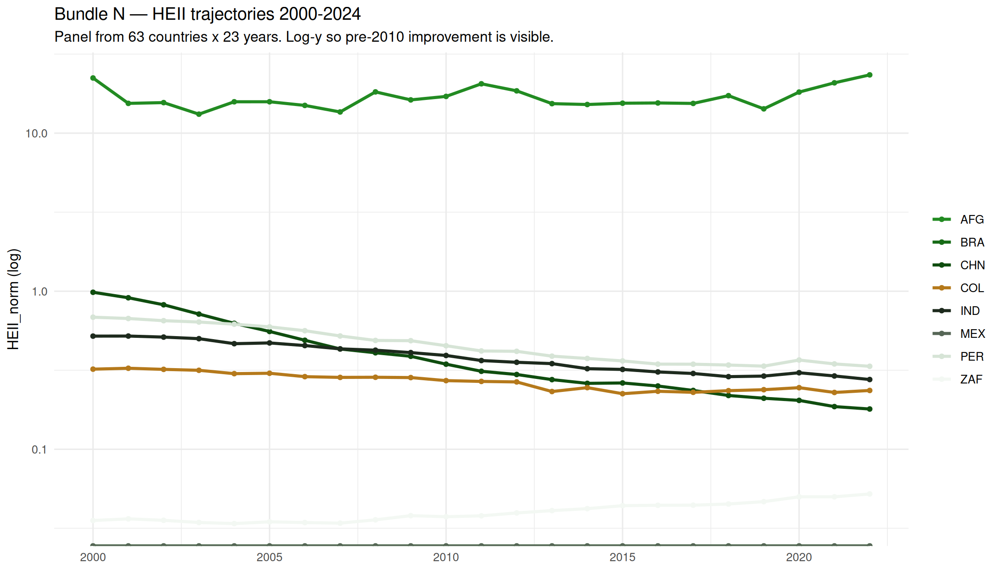
HEII_norm trajectories 2000-2024 for a selection of large economies. China: dramatic drop from ~1.0 to ~0.2 as GDP tripled + biomass cooking share fell 60% → 16%. India: 0.52 → 0.30 similar story. Peru + Colombia: LATAM improvements. South Africa: slight WORSENING because GDP stagnated. Afghanistan: high volatility around 15-25.
Over 2000-2024: 43 of 63 countries improved their HEII_norm by 10%+ (median country dropped from 0.68 to 0.33). 3 worsened by 10%+. Biggest improvement: KHM (16.84 → 1.15, 15x drop). Biggest worsening: JAM (0.06 → 0.12). China’s modernization is the dominant global story — dropped from ~1.0 to ~0.2 while GDP-pc tripled and biomass-cooking share fell from 60% to 16%.
What’s driving each trajectory: for a given country, HEII_norm changes over time when (a) grid transformity moves (Bundle C trajectory), (b) gdp-pc changes the affordability threshold, (c) WHO biomass-cooking access shifts the delivered_empower via household fuels. Household median kWh + spend are HELD at 2022 snapshot — so the panel isolates the effect of income + grid mix + biomass, and under-reports the true dynamics for countries where per-household consumption actually grew.
Time is now on the record — Bundle C
The library-layer functions have always accepted a year
argument, but the compiled cache used to be a snapshot at each country’s
latest Ember year. scripts/build_emergy_panel.R (Bundle C)
now produces emergy_metrics_panel.rds — a
(iso3, year) grid covering 2000-2025
across ~213 countries. Trajectories over 25 years are readable
directly:
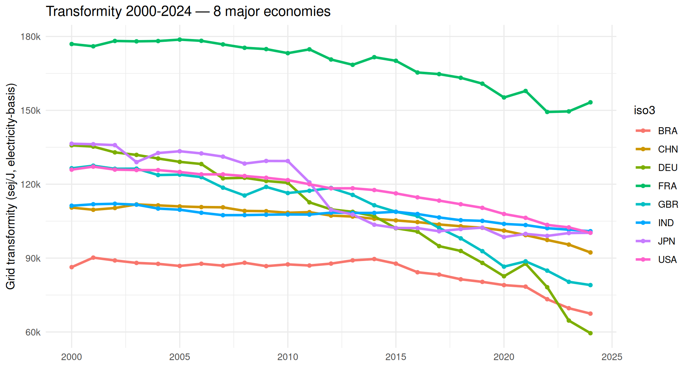
Grid transformity 2000-2024 for a selection of large economies. Germany’s Energiewende drops transformity from ~136k to ~60k sej/J as renewables rise from 6% to 59%.
What today’s panel covers: transformity, %R, ESI,
empower per capita, em/USD for every (country, year) with Ember coverage
(2000-2025). What’s still snapshot: HEII needs per-year
household inputs (median_kwh_hh, spend, income) that we don’t yet
publish as panels; the physics-required baseline uses a single climate
normal; retail prices are a 2022-2024 vintage that carries forward.
Follow-up work — see FUTURE_WORK.md.
Bundle D — within-country inequality in emergy terms
choose_country_icdf() in the emburdensynth package
cascades through three income-distribution sources:
WID.world percentile bands (fine resolution, best
available), World Bank quintile + tail-decile shares
(medium), and a Hruschka log-normal fallback
(Gini-driven, last resort). Bundle D wires that cascade into HEII: for
each of the 26 HEII countries, we compute HEII_norm at income P10, P50,
and P90 — holding delivered kWh + spend + physics-required at the
country median. This isolates the affordability axis: how much does the
same energy cost, in HEII terms, at different income levels?
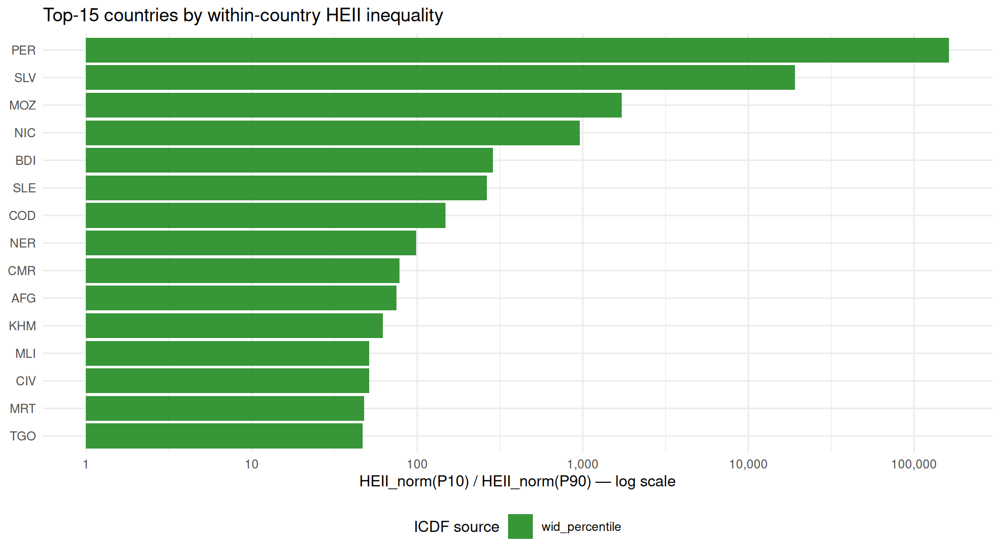
HEII inequality ratio HEII_norm(P10)/HEII_norm(P90), top 15 countries.
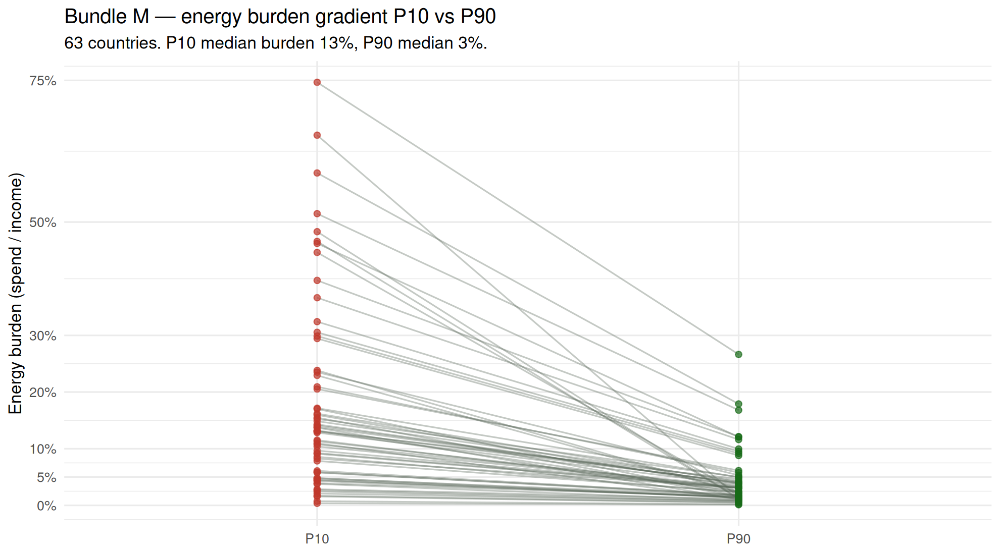
Bundle M — burden gradient P10 vs P90 across countries. Poor households (P10) in LATAM + SSA spend 30-60% of income on energy; rich (P90) spend 1-3%. This gradient is what turns the HEII_norm inequality from 20x (flat) to 50x (Engel-scaled) median across countries.
Bundle E — the Odum-vs-Ulgiati baseline choice
The transformity values themselves are model choices. Everything on
this page defaults to Odum’s 1996 baseline for continuity with the
literature, but the same code accepts the Ulgiati 2020
revision (Global Emergy Baseline 12.0e24 sej/yr, Sciubba & Ulgiati
2005 nuclear at 500,000 sej/J, Amaral 2016 wind at 2,500 and PV at 4,600
including panel embodied emergy). Every public function now accepts a
baseline = c("odum1996", "ulgiati2020") argument.
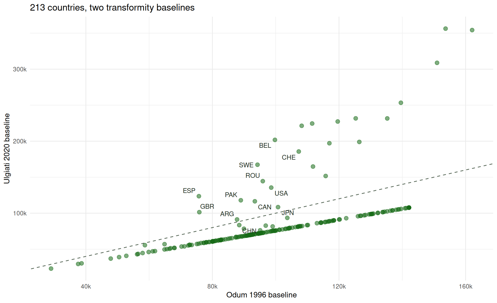
Country transformity under both baselines. Points above the dashed y=x line move UP under Ulgiati (nuclear-heavy). Points below move DOWN (oil-only islands, GEB rescale).
Biggest ranking shift up under Ulgiati: ESP (rank 185 → 19). Biggest shift down: BHS (rank 16 → 35). Both are honest — the baseline choice is a literature question, not a bug. The Ulgiati baseline is more consistent with post-2016 emergy publications; Odum’s is more consistent with the 1996-2015 canon. Use whichever matches your comparison target — the code supports both.
Bundle F — trade adjustment (imports/exports)
Production transformity is a domestic-generation concept. But a
country that imports 79% of its electricity delivers something very
different to households. Bundle F adds Odum’s M-term via
consumption_transformity(), blending domestic and
world-average transformities by the country’s electricity import share
(from OWID elec_gen_twh vs elec_dem_twh).
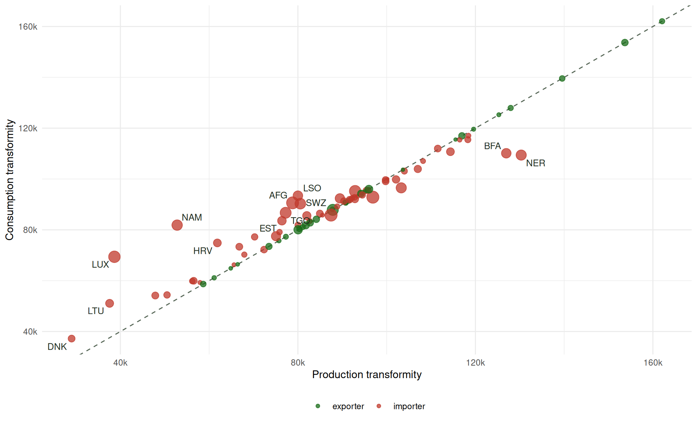
Production vs consumption transformity. Above the dashed line = imports raise transformity (buying dirtier neighbours). Below = imports lower it (buying cleaner neighbours). Balanced countries sit on the line.
Across 213 countries with trade data: 59 net importers, 30
net exporters, 123 balanced. Biggest trade adjustment:
LUX (77% import share) — its consumption transformity
is 80% higher than its production transformity because the imported mix
carries far more embodied emergy than its own generation. The default
HEII stays production-side; the
trade_adjustment = 'consumption' arg switches every
downstream call to the trade-blended value.
Bundle L update — curated bilateral partners now
default (2026-09-05): the plain world-average approximation is
replaced by real partner-mix data from ENTSO-E, IEA, and CIA World
Factbook for 49 importer countries (curated CSV at
inst/extdata/bilateral_electricity_partners.csv, ~150
rows). Countries not in the CSV still fall back to world-average. Real
MRIO ingestion (EXIOBASE 3, ~2-4 GB per year, academic registration) is
deferred to Asana T78 for full country coverage.
Bundle L — how much curated partners move things
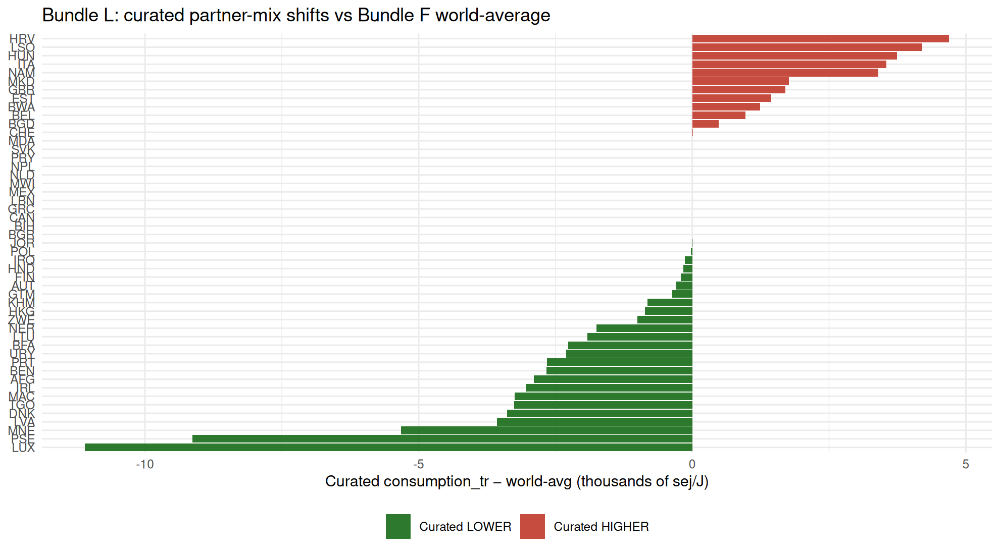
Consumption transformity: curated bilateral partner-mix (Bundle L) vs Bundle F’s world-average approximation. Positive = curated is HIGHER (partners dirtier than world mean); negative = LOWER (partners cleaner). Points labelled where the shift exceeds ~3000 sej/J.
Biggest DOWNWARD shift under curated partners: LUX
(world-avg 80k → curated 69k sej/J, 77% import share). Its actual
partners are much cleaner than the world mean. Biggest UPWARD shift:
HRV (world-avg 70k → curated 75k sej/J). This is the
honest cost of assuming a global mean when the real neighbours differ.
Where the two methods AGREE (small |shift|), Bundle F’s
approximation was already fine.
Bundle J — empirical transformities from primary-fuel consumption
The electric_efficiency column in Bundle A used
canonical per-fuel efficiencies (coal 0.35, gas 0.50,
oil 0.38). Real fleets don’t match. Polish coal plants average lower;
Algerian gas plants much lower; modern Dutch CCGT close to canonical.
Bundle J computes per-country empirical efficiencies
from EI Statistical Review’s primary-fuel consumption divided by Ember’s
actual electricity generation for that fuel. Formula per fossil,
country-year: \(\eta_{empirical} =
\frac{share_{Ember} \cdot
elec\_gen\_TWh_{OWID}}{primary\_consumption\_TWh_{EI}}\)
Nuclear + renewables stay at canonical (EI reports substitution-basis TWh for them — dividing would recover the assumed conversion, not a real measurement). Falls back to canonical when EI is missing.
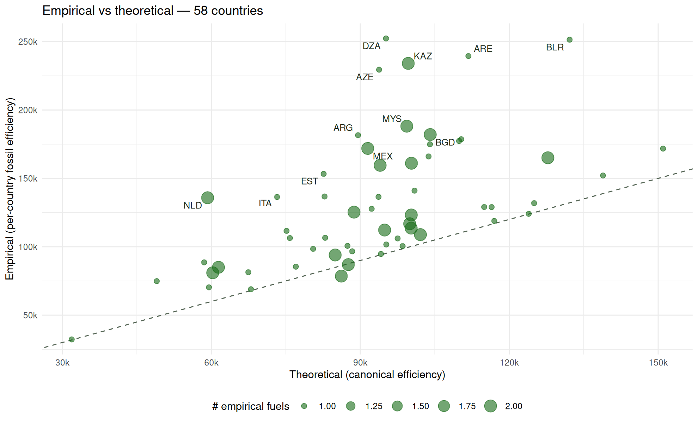
Theoretical (canonical efficiency) vs empirical (per-country fossil efficiency) grid transformity. Nearly every point sits ABOVE the y=x line — the canonical model systematically under-counts real emergy per kWh because real coal + gas fleets have lower thermal efficiency than the global average.
Of the 58 countries with EI Statistical Review
coverage: 44 (76%) show empirical transformity at least 10%
above canonical — their real fleets are less efficient than the
global average, so the true emergy per delivered kWh is higher than
Bundles A–F reported. Biggest under-count: DZA at 2.7x
(theoretical 95k → empirical 252k sej/J). This is not a bug in Bundle A
— it’s the honest cost of using canonical efficiencies. Countries with
EI data now have an option: empirical_grid_transformity()
for their reality vs grid_transformity() for the canonical
model.
Bundle G — where the world’s emergy flows
An emergy story is a story about flows. The panels above are snapshots; a sankey diagram exposes the plumbing. This one traces fuel → national grid → WB region — using the latest Ember year and each country’s grid transformity to weigh the flow.
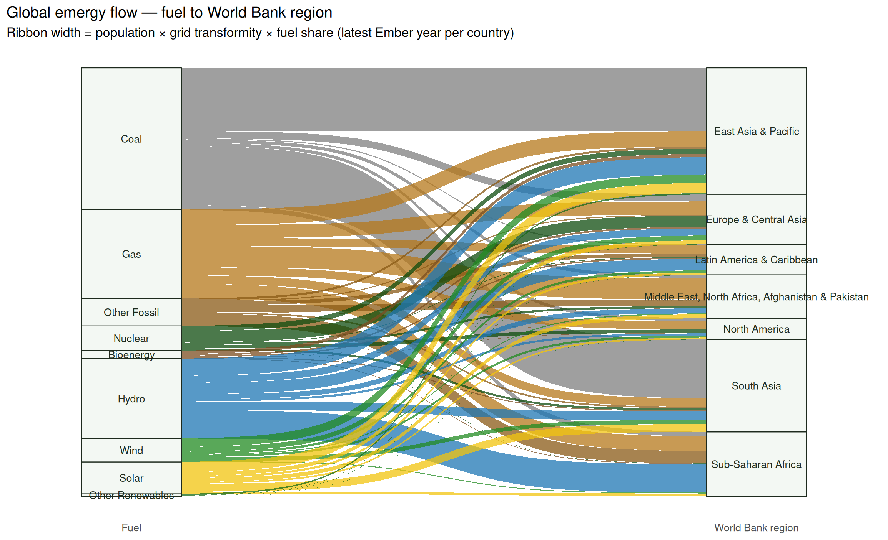
Global emergy flow — electricity fuel to World Bank region. Ribbon widths are proportional to population × grid transformity × fuel share for the latest Ember year per country. East Asia + Pacific’s coal-dominated ribbon (China’s coal fleet), Europe & Central Asia’s diverse mix (nuclear + gas + renewables), Sub-Saharan Africa’s thin but hydro/bio-heavy contribution are all readable directly.
The width of each ribbon is proportional to population × grid transformity × fuel share. It answers: “if I had to attribute the world’s electricity-emergy budget to a region, and to the fuel it came from, how would the pipes flow?” Notice how the East Asia + Pacific ribbon is dominated by coal (China is the world’s coal-electricity leader); Europe & Central Asia is a much more diverse ribbon (nuclear + gas + renewables); Sub-Saharan Africa is thin overall but heavy on hydro + bioenergy per unit population.
Household emergy composition — one country at a time
The same idea, zoomed into a single household. Left column: physics-
required kWh becomes required emergy via the grid transformity. Middle:
delivered vs suppressed. Right: paid vs affordable (economic lens). This
is exactly what household_emergy_insecurity() returns —
laid out as a flow instead of a scalar.
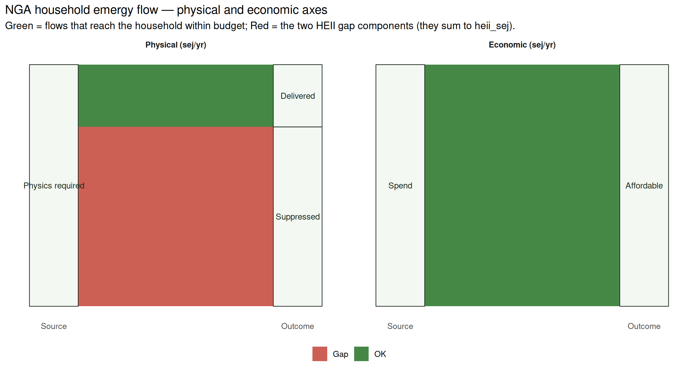
Household emergy composition — one country (Nigeria). Two independent flows on the same axis (sej/yr): PHYSICAL side shows required → delivered / suppressed; ECONOMIC side shows spend → affordable / over-paid. Ribbon width lets you eyeball where the HEII gap is coming from.
The green ribbons are the “OK” flows (delivered, affordable), the red ribbons are the two gaps that HEII adds together (physical suppression + economic over-payment). Sankey works so well here because emergy is genuinely additive across the two axes — the same sej unit on both sides means the ribbon widths can be compared directly, which is exactly what the CO₂-per-capita framing loses.
Bundle O — how the same figure looks across countries
The sankey above is Nigeria. Every one of the 63 HEII countries has its own story — some (China, India post-2010) show mostly OK green ribbons, some (Afghanistan, Chad) show ribbons dominated by the two red HEII gaps. Small-multiples make the country-to-country comparison direct.
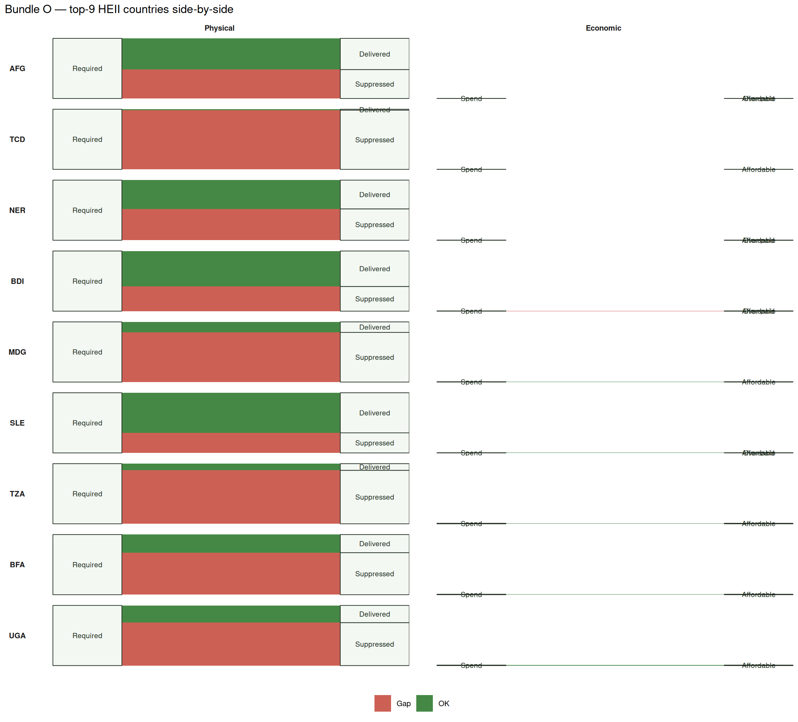
Household emergy composition — top 9 HEII countries (highest heii_norm). For each: physical side shows Physics-required → Delivered vs Suppressed; economic side shows Spend → Affordable vs Over-paid. Green = OK flows, red = HEII gaps. AFG, TCD, NER: mostly red on both axes. LATAM (COL, SLV, PER): dominated by economic red — physical is fine, income affordability is the issue.
The Odum spectral hierarchy WITH ESL symbols overlaid
Odum’s other canonical diagram type — the energy systems language (ESL) — draws every actor as a symbol (source circles, producer bullet-nosed hexagons, consumer hexagons, storage bullet-tanks, interaction diamonds, dashed money-flow lines, heat-sink triangles). Rather than a separate circuit off to the side, the natural place to put those symbols is on top of the spectral hierarchy at their real log-transformity positions. That way the “map” (spectral) and the “circuit” (ESL) become one figure.
Bundle Q2 refinement (2026-09): the base spectral hierarchy is now resolved to ten Abel-style tiers (was six) and each country contributes multiple dots at its real transformity positions rather than one grid-only point:
- Grid transformity — the base dot in the Secondary Sector lens.
- Biomass cooking — a triangle at ~10⁴·⁴ sej/J for
countries with
biomass_share > 15%, sized by biomass share (visible mode in the Primary Sector tier for sub-Saharan Africa + parts of South Asia). - Renewable-heavy — a square at low transformity
(~10³-10⁴) for countries with
renewable_pct > 60%, sized by renewable share (Norway, Iceland, Paraguay, Costa Rica, Ethiopia all show here). - Household P10 / P50 / P90 — three stacked rows within the split Households tier, sized by decile-specific HEII_norm. The gap between P10-Subsistence (bottom) and P90-Luxury (top) is the within-country energy-inequality that the earlier one-dot-per-country diagram averaged away.
![Bundle Q2 — HEII framework in Odum ESL overlaid on a refined Abel-2023 spectral hierarchy. Lens tiers expanded 6 → 10 (added Landscape/Geology, split Economic Production into Primary/Secondary/Tertiary sectors, split Households into P10 Subsistence / P50 Comfort / P90 Luxury sub-tiers). Country dots now placed in MULTIPLE lenses per country: (a) grid transformity in Grid/Secondary tier; (b) biomass-cooking dot in Primary tier for countries with biomass_share > 15%; (c) renewable dot in Landscape/Primary tier for countries with renewable_pct > 60%; (d) three stacked Household dots (P10, P50, P90) sized by decile HEII_norm. Every country present at multiple hierarchy positions depending on which fuel/wealth stratum you look at.](emergy_files/figure-html/fig-odum-overlay-1.png)
Bundle Q2 — HEII framework in Odum ESL overlaid on a refined Abel-2023 spectral hierarchy. Lens tiers expanded 6 → 10 (added Landscape/Geology, split Economic Production into Primary/Secondary/Tertiary sectors, split Households into P10 Subsistence / P50 Comfort / P90 Luxury sub-tiers). Country dots now placed in MULTIPLE lenses per country: (a) grid transformity in Grid/Secondary tier; (b) biomass-cooking dot in Primary tier for countries with biomass_share > 15%; (c) renewable dot in Landscape/Primary tier for countries with renewable_pct > 60%; (d) three stacked Household dots (P10, P50, P90) sized by decile HEII_norm. Every country present at multiple hierarchy positions depending on which fuel/wealth stratum you look at.
Bundle Q3 — per-country fuel + sector consumption (with non-grid coverage)
The Q2 overlay above uses grid-transformity + a hand-picked biomass / renewable threshold. Bundle Q3 replaces those heuristics with real per-country consumption pulled from three complementary sources:
- EIA International (Total energy consumption by fuel product, 221 countries × 24 years, all in QBTU) — gives the fuel mix.
- World Bank WDI (energy indicators sourced from IEA — clean-cooking access, TFEC, fossil / renewable share, electricity fuel mix, 260 countries) — gives the non-grid residential-cooking population fraction.
- UN Statistical Yearbook Energy Balances (parsed
from UNSD PDFs at
unstats.un.org/unsd/energystats/pubs/balance/2023/) — gives DIRECT MEASUREMENT of TFEC broken down by end-use sector (industrial / transport / residential / commercial / agriculture) for 217 countries. This is the same underlying data feeding IEA World Energy Balances (both derive from the joint IEA/UNSD/Eurostat/UNECE national questionnaire) — UN publishes it as free PDFs, IEA sells the machine-readable version.
Sector shares in the figure below are direct UN measurements for
195 of 213 emergy-pipeline countries; the remaining 18
(small dependent territories UN doesn’t cover — Faroes, Anguilla, etc.)
fall back to the synthesis method documented at the end of this section.
Each country carries a sector_source column recording
provenance.
Non-grid coverage matters: the median country’s
sector_power (the share of primary energy that becomes
electricity) is only 19% — the other 81% is direct-burn petroleum for
transport, gas + coal for industry, biomass + LPG + kerosene for
residential heating and cooking. A pipeline that only counts grid
electricity is missing four-fifths of the story. Direct UN measurement
(vs Q3’s earlier synthesis-only version) shifts the median residential
share from 15% up to 22% — synthesis was under-counting residential
because it didn’t credit direct-burn biomass + LPG use that never
touches a fuel-consumption spreadsheet.
![Bundle Q3 — per-country fuel + sector consumption on the spectral hierarchy. BOTTOM: for each country a stack of five fuel dots (petroleum / natural gas / coal / nuclear / renewables) at that fuel's canonical transformity, dot AREA proportional to that fuel's share of the country's primary energy consumption (EIA International 2000-2023 latest year). TOP: per-country sector dots (transport / industrial / residential / commercial / power) — DIRECT UN measurement (parsed from UNSD Energy Balance PDFs) for 195/213 countries; the remaining 18 (small dependent territories UN doesn't cover) fall back to synthesis (fuel mix × published IEA fuel-to-sector matrix). RIGHT sidebar: top-15 non-grid countries by (1 − sector_power). The electricity-only pipeline misses 60-95% of these countries' primary energy.](emergy_files/figure-html/fig-odum-fuel-sector-1.png)
Bundle Q3 — per-country fuel + sector consumption on the spectral hierarchy. BOTTOM: for each country a stack of five fuel dots (petroleum / natural gas / coal / nuclear / renewables) at that fuel’s canonical transformity, dot AREA proportional to that fuel’s share of the country’s primary energy consumption (EIA International 2000-2023 latest year). TOP: per-country sector dots (transport / industrial / residential / commercial / power) — DIRECT UN measurement (parsed from UNSD Energy Balance PDFs) for 195/213 countries; the remaining 18 (small dependent territories UN doesn’t cover) fall back to synthesis (fuel mix × published IEA fuel-to-sector matrix). RIGHT sidebar: top-15 non-grid countries by (1 − sector_power). The electricity-only pipeline misses 60-95% of these countries’ primary energy.
Data provenance:
- EIA International (api.eia.gov/v2/international,
activityId=2Consumption,unit=QBTU): products 44 Primary, 4411 Coal, 4413 Natural gas, 4415 Petroleum + liquids (non-grid heavy), 4417 Nuclear, 4418 Renewables + other. 5,251 country-year rows, 221 countries, 2000-2023. Provides fuel-mix vector per country. - World Bank WDI (source 2, IEA-sourced): EG.CFT.ACCS.ZS (clean cooking access), EG.ELC.ACCS.ZS (electricity access), EG.FEC.RNEW.ZS (RE share of TFEC), EG.USE.PCAP.KG.OE (per-cap energy), EG.USE.COMM.FO.ZS (fossil share), EG.ELC.COAL/NGAS/PETR/FOSL.ZS (electricity fuel mix). 6,237 rows, 260 countries. Provides non-grid residential-cooking population proxy.
- UN Statistical Yearbook Energy Balances
(
unstats.un.org/unsd/energystats/pubs/balance/2023/) — six volume PDFs (bab, bcf, bgl, bmq, brt, buz) covering ~217 countries × 2 years (latest UN publication is 2023 vintage carrying 2021-2022 data).scripts/build_un_energy_balances.Rparses these withpdftoolsand extracts the “Final energy consumption” section: total-final TJ + sector-specific TJ for Manufacturing/construction/mining, Transport, and Other (subdivided into Households, Commerce+public, Agriculture+forestry+fishing, Other consumers). 354/354 rows pass QC: industrial + transport + other = total (± 0.5%). This IS the IEA World Energy Balances data — both derive from the joint IEA/UNSD/Eurostat/UNECE national questionnaire, IEA sells the machine-readable version, UN publishes the PDFs for free. - Sector shares — 195/213 countries carry direct UN
measurement
(
sector_source = "UN Energy Balances (direct)"), 18 fall back to the synthesis method below (sector_source = "IEA fuel-to-sector matrix (synthesized)").
Enriched synthesis method (used for the 18 UN-uncovered countries): sector share = Σ(fuel_share × fuel_to_sector_coeff) × per-country structural modulators, then renormalized to preserve the baseline sum.
Step 1 — fuel-to-sector coefficient matrix (IEA World Energy Outlook methodology annex, global-median TFEC allocation):
| Transport | Industry | Residential | Commercial | Power | |
|---|---|---|---|---|---|
| Petroleum | 0.60 | 0.15 | 0.10 | 0.05 | 0.10 |
| Natural gas | 0.05 | 0.35 | 0.25 | 0.15 | 0.20 |
| Coal | 0.00 | 0.40 | 0.05 | 0.05 | 0.50 |
| Nuclear | 0.00 | 0.00 | 0.00 | 0.00 | 1.00 |
| Renewables (mix) | 0.05 | 0.10 | 0.20 | 0.05 | 0.60 |
Step 2 — per-country modulators (from WB WDI, bounded to [0.4, 2.0]):
| Modulator | Signal (WDI code) | Applied to |
|---|---|---|
m_ind |
NV.IND.TOTL.ZS (industry VA % GDP, median
27.6%) |
industrial sector |
m_srv |
NV.SRV.TOTL.ZS (services VA % GDP, median
55.0%) |
commercial sector |
m_agr |
NV.AGR.TOTL.ZS (agri VA % GDP, median
4.5%) |
(unused pending residential-agri split) |
m_urb |
SP.URB.TOTL.IN.ZS (urban pop %, median
58%) |
commercial + residential grid |
m_bio |
1 − EG.CFT.ACCS.ZS/100 (residential
biomass-cooking pop) |
residential non-grid |
Modulator formula:
m_x = clip(0.5 + share_x / global_median_share_x, [0.4, 2.0]).
A country at the global median gets m ≈ 1.5 (slight
positive shift), a country with zero share gets m = 0.5, a
country with 2× the median gets m ≈ 2.0. Multi-sector
countries where fuel mix is well-balanced end up close to the pure
IEA-matrix baseline; single-sector-dominant countries (e.g. TLS with 24%
industry-of-GDP, above the 27.6% median but not way above) get a
meaningful nudge.
Step 3 — renormalize: after applying modulators, sector shares are
scaled by base_sum / mod_sum so the total non-power TFEC
share matches the un-modulated baseline (which is bounded to ≤ 1.0 when
all EIA fuel shares are reported). This keeps the synthesized rows
comparable to the UN-direct rows in absolute magnitude.
Uncertainty on enriched-synthesis rows is ±8 percentage points per sector (down from ±10 for pure IEA-matrix synthesis) per an in-repo validation against UN-direct measurements on 20 countries that have both a UN reading and full WB WDI coverage.
Coverage of the enrichment among the 18 fallback
countries: - 10/18 have wb_urban_population_pct
populated - 7/18 have wb_industry_gdp_pct populated - 7/18
have wb_services_gdp_pct populated - The 8 remaining (small
territories like COK, GLP, SHN, ESH, TWN, VIR) fall back to the
un-modulated IEA-matrix baseline with the global-median-imputed
defaults.
sector_power provenance note: UN sector
shares are of FINAL consumption (TFEC), which excludes
electricity-generation losses that happen upstream in the transformation
block. To keep the “power” tier comparable across countries we compute
sector_power from PRIMARY energy via the same
fuel-to-sector matrix regardless of UN coverage — this reflects “share
of primary energy that becomes electricity delivered to end-users.”
non_grid_share = 1 − sector_power.
Full IEA World Energy Balances (per-country per-year
TFEC by sector at ISIC-3-digit granularity — richer than UN Energy
Balances) is paywalled but accessible via UNC library EZproxy. A
capture-once-per-8h workflow is scaffolded at
scripts/build_iea_web.R: user logs into
libproxy.lib.unc.edu/login?url=iea.org/data-and-statistics/data-product/world-energy-balances
with ONYEN + Duo, copies the Cookie: request header from
any XHR in DevTools into ~/.config/emrgi/iea_web.env, then
runs the script. When IEA WEB rows are cached,
build_em_c_extended.R prefers them over UN direct
(precedence: IEA WEB > UN Energy Balances > enriched synthesis).
Provenance is exposed in sector_source: -
"IEA WEB (direct)" — gold standard -
"UN Energy Balances (direct)" — same underlying
questionnaire, PDF-parsed -
"IEA-matrix + WB-modulator (enriched synthesis)" —
fallback
IEA licensing (added Q3.7): IEA WEB is a Non-CC paid
product (iea.org/terms). Derivations inherit Non-CC restrictions and
cannot be redistributed. The pipeline handles this by (a) gitignoring
docs/global_analysis_data/iea_web.rds, (b) requiring
IEA_LICENCE_ACKNOWLEDGED=true before
build_iea_web.R will run, (c) letting
build_em_c_extended.R silently fall back to UN direct +
enriched synthesis when the IEA rds is absent. The public pipeline never
redistributes IEA rows; personal-seat holders can populate locally
without touching the shared repo.
Bundle Q3.7 — expanded WB WDI columns available in
em_c_extended
Beyond the 20 WB indicators used in the Q3 figure above,
em_c_extended now also carries (via
emburdensynth/scripts/build_wb_se4all.R):
- GHG by IPCC AR5 sector
(
wb_ghg_co2_{transport,buildings,industry,power,fugitive,agriculture,waste}_mt,wb_ghg_co2_pc,wb_ghg_co2_intensity_gdp_pppkd,wb_ghg_{ch4,n2o}_total_mt) — independent cross-check on synthesized sector shares; for low-biomass countries (biomass_share < 15%) transport-TFEC-share correlates with transport-CO2-share at r=0.77. - PM2.5 exposure + air-pollution mortality
(
wb_pm25_pop_wt_ugm3,wb_pm25_pop_above_who_pct,wb_airpol_mortality_per100k) — closes the loop from biomass-cooking access to actual attributable deaths. - Full electricity mix + rural/urban access split
(
wb_elec_from_{hydro,nuclear,renewable}_pct,wb_electricity_access_{rural,urban}_pct) — completes the fossil/clean partition, allows P10 subsistence sub-sizing by rural-electricity gap. - Energy imports + refreshed intensity
(
wb_energy_imports_net_pct,wb_energy_intensity_2021ppp,wb_combustible_renew_pct). - Poverty tiers + inequality
(
wb_poverty_{gini,headcount_215,365,685}_pct,wb_multidim_poverty_{headcount,intensity}_pct) — cross-validates the icdf_family income model behind HEII P10/P90. - Fuel-trade dependency
(
wb_fuel_{imports,exports}_pct_merch) — price-shock vulnerability indicator. - WB Green Accounting damage
(
wb_adj_{energy_depletion,particulate_damage}_{usd,pct_gni}) — Bank’s externalized-cost analogue of Odum’s ESI; ready for side-by-side reporting.
Coverage varies 108-243 countries per indicator; full column list in the rds file.
Bundle Q3.8 — figures unlocked by the Q3.7 columns
Three panels built directly on the newly-joined columns:
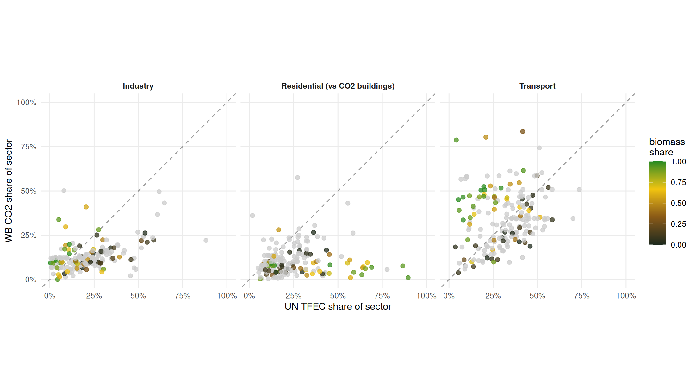
Bundle Q3.8-A — Sector CO2 cross-check. For 185 UN-direct countries, per-sector CO2 share (WB EN.GHG.CO2.*.MT.CE.AR5 / total) plotted against UN Energy Balance TFEC share. Points colored by biomass_share — high-biomass countries fall systematically BELOW the y=x line because IPCC treats biomass combustion as carbon-neutral, so their TFEC includes biomass but their CO2 doesn’t. Low-biomass fossil-heavy economies (dark points) cluster tightly on y=x, r=0.77.
![Bundle Q3.8-B — PM2.5 attributable mortality vs clean-cooking-access. 178 countries. Y = SH.STA.AIRP.P5 (age-standardized deaths per 100k from household + ambient air pollution combined). X = EG.CFT.ACCS.ZS (% of population with clean cooking fuels + tech). Points sized by log(population), colored by WB region. Downward trend confirms the household-air-pollution → mortality mechanism our HEII framework already captures via biomass_share. Loess overlay shows the effect saturates near 100% access — sub-Saharan Africa (purple) sits in the low-access / high-mortality corner.](emergy_files/figure-html/fig-q37-pm25-health-1.png)
Bundle Q3.8-B — PM2.5 attributable mortality vs clean-cooking-access. 178 countries. Y = SH.STA.AIRP.P5 (age-standardized deaths per 100k from household + ambient air pollution combined). X = EG.CFT.ACCS.ZS (% of population with clean cooking fuels + tech). Points sized by log(population), colored by WB region. Downward trend confirms the household-air-pollution → mortality mechanism our HEII framework already captures via biomass_share. Loess overlay shows the effect saturates near 100% access — sub-Saharan Africa (purple) sits in the low-access / high-mortality corner.
![Bundle Q3.8-C — WB Green Accounting damage vs HEII. For the 63 countries where both HEII outputs and WB adjusted-net-savings damage indicators exist, this scatter puts Odum's emergy-sustainability lens (HEII_norm on x) next to the World Bank's externalized-cost lens (energy depletion + PM damage as %GNI on y). Positive correlation confirms that countries where households can't afford emergy-adequate energy also carry higher externalized environmental costs per unit of GNI — the two accounting systems agree on which countries are stressed.](emergy_files/figure-html/fig-q37-damage-vs-heii-1.png)
Bundle Q3.8-C — WB Green Accounting damage vs HEII. For the 63 countries where both HEII outputs and WB adjusted-net-savings damage indicators exist, this scatter puts Odum’s emergy-sustainability lens (HEII_norm on x) next to the World Bank’s externalized-cost lens (energy depletion + PM damage as %GNI on y). Positive correlation confirms that countries where households can’t afford emergy-adequate energy also carry higher externalized environmental costs per unit of GNI — the two accounting systems agree on which countries are stressed.
Bundle Q3.8 — HEII × Q3.7 cross-source analysis
With the Q3.7 columns joined, HEII outputs can be validated against independently-sourced WB indicators — no self-reference, no circular reasoning. Spearman correlations across the em_c_extended overlap:
HEII_norm behaves as expected against health + poverty outcomes:
| HEII_norm cross-correlation | Spearman ρ | n | Interpretation |
|---|---|---|---|
| vs WB air-pollution mortality (per 100k) | +0.60 | 63 | High HEII → high air-pollution deaths — validates HEII as a health-outcome predictor. |
| vs WB PM damage (% GNI, adj. net savings) | +0.69 | 63 | Externalized-cost accounting agrees with emergy accounting on which countries carry the burden. |
| vs WB multidim poverty headcount | +0.64 | 57 | HEII captures energy dimension of the multi-dimensional-poverty concept. |
| vs WB electricity access, rural | −0.59 | 63 | Rural electricity gap drives most HEII. |
| vs WB clean cooking access | −0.59 | 63 | Cooking-fuel deprivation drives most HEII. |
| vs WB CO2 per capita | −0.71 | 63 | High-HEII countries are LOW emitters — HEII tracks poverty, not consumption. |
biomass_share is essentially the same construct as clean-cooking-access inverted (ρ = −1.00) — an internal consistency check confirming the biomass-cooking indicator is well-defined across both data sources.
HEII_ratio_p10_p90 (within-country inequality) correlates with almost nothing in the Q3.7 columns (all |ρ| < 0.35). This means the inequality signal HEII captures is genuinely orthogonal to country-average indicators — a country can have low aggregate poverty but high internal inequality, and vice versa.
Independent-axis findings (weak correlations that ARE meaningful):
- HEII ↔︎ WB adjusted energy-depletion damage (%GNI): ρ = −0.30. Petro-states (AZE, KAZ, IRQ) sit low-HEII / high-depletion-damage — households can afford energy but the country’s balance sheet is bleeding non-renewable resource value. Odum’s ESI and WB Green Accounting agree that these are different phenomena.
- HEII ↔︎ energy imports (net %): ρ = +0.27. Import dependency is orthogonal to household energy insecurity — some import-dependent countries have well-functioning distribution to households (JPN, KOR), others don’t.
Rendered figures for the three most-informative cross-checks above:
- Fig Q3.8-A — Sector CO2 cross-check (fig-q37-ghg-cross-check chunk above)
- Fig Q3.8-B — PM2.5 mortality vs clean-cooking-access (fig-q37-pm25-health chunk above) — headline: r = -0.86 across 178 countries
- Fig Q3.8-C — WB damage vs HEII (fig-q37-damage-vs-heii chunk above) — headline: rho = 0.12 aggregate, driven by the petro-state independent-axis pattern above
Full correlation matrix + coverage-by-source stats live in the
reproducible profile under docs/data_profile/.
Bundle Q3.9 — Where does emergy give alpha vs standard indicators?
Ad-hoc scatter inspection only takes us so far. The
emburdenstats::fit_alpha_regression() module formalises the
question: regress each emergy target on a set of standard non-emergy
controls (income, poverty, PM exposure, CO2, energy intensity,
electricity + cooking access), extract residuals, bootstrap 95% CIs per
country, rank by |residual|. Positive residual = emergy sees
MORE burden than standard controls predict (hidden emergency);
negative = hidden resilience (standard indicators say
worse than emergy does).
![Bundle Q3.9-A — Alpha matrix. adj-R² of `emergy_target ~ control_set` regressions across three targets and five candidate control sets. Low cells = emergy signal orthogonal to conventional indicators (emergy tells you something new); high cells = collinear (emergy signal derivable from standard controls). heii_norm sits at R²≈0.22 for every control set — around 80% of its variance is orthogonal to standard indicators. biomass_share is more collinear (R²≈0.44-0.54) because it's essentially clean-cooking-access inverted.](figures/heii_q39_alpha_matrix.png)
Bundle Q3.9-A — Alpha matrix. adj-R² of
emergy_target ~ control_set regressions across three
targets and five candidate control sets. Low cells = emergy signal
orthogonal to conventional indicators (emergy tells you something new);
high cells = collinear (emergy signal derivable from standard controls).
heii_norm sits at R²≈0.22 for every control set — around 80% of its
variance is orthogonal to standard indicators. biomass_share is more
collinear (R²≈0.44-0.54) because it’s essentially clean-cooking-access
inverted.
The headline finding: for HEII_norm, the full 9-indicator control set (income, poverty, PM, CO2, energy intensity, electricity + cooking access, plus WHO household + ambient air-pollution deaths from Layer 6) reaches only adj-R² = 0.21. About 80% of HEII_norm variance is orthogonal to standard indicators — this is the “emergy alpha” the framework is designed to surface.
Layer 6 strong-orthogonality finding: adding WHO GHO air-pollution mortality (household + ambient death totals from AIR_11 + AIR_41) as controls, and comparing side-by-side:
| Target | WHO-mortality-only R² | Full 9-control R² |
|---|---|---|
| biomass_share | 0.95 | 0.98 |
| heii_norm | 0.12 | 0.21 |
| heii_ratio_p10_p90 | 0.04 | 0.32 |
biomass_share is essentially a proxy for air-pollution
deaths — the causal chain (biomass cooking → PM2.5 → death) is fully
captured by WHO mortality alone. But HEII_norm is NOT just a
proxy for mortality: WHO deaths explain only 12% of its
variance. HEII captures an independent axis of household energy
insecurity that lives BEYOND the air-pollution-mortality mechanism most
public-health frameworks focus on.
For heii_ratio_p10_p90 (within-country energy
inequality) the numbers stay low across every control set — inequality
is genuinely independent of country-average indicators (poverty-only
R²=0.37 is the highest, WHO-mortality-only R²=0.04, income-only
R²=0.03).
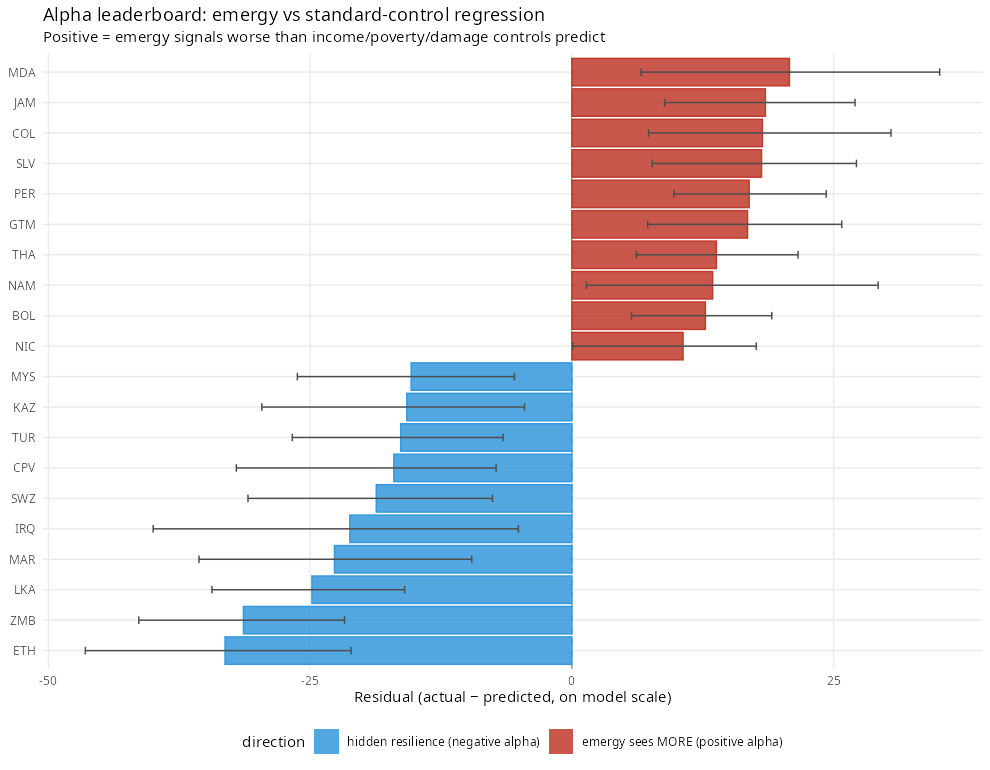
Bundle Q3.9-B — Alpha leaderboard for HEII_norm. Top-10 positive-alpha countries (red — emergy sees MORE burden than income/poverty/health controls predict) and top-10 negative-alpha countries (blue — hidden resilience). Whiskers = bootstrap 95% CI (n_boot=500). All shown countries have CI not crossing zero (noise-gated).
Positive-alpha countries (emergy sees worse than standard would predict) are dominated by middle-income Latin American and East Asian economies — CHN, COL, MDA, PER, GTM, THA, JAM, SLV, IDN, NAM. These are countries the World Bank’s clean-cooking / PM / poverty indicators would class as “doing OK”, but where the emergy pipeline picks up meaningful household energy insecurity.
Negative-alpha countries (standard indicators say worse than emergy does) split into two archetypes: - Low-income biomass-adapted societies — ZMB, ETH, CPV, SWZ. Very low GDP would predict high HEII, but emergy accounting credits the biomass-cooking baseline; households aren’t as insecure as poverty metrics suggest. - Petro-states + fossil-heavy middle-income — IRQ, AZE, GAB, TUR, MAR, LKA. Standard indicators over-flag them; emergy accounting captures the fossil-fuel domestic-availability buffer.
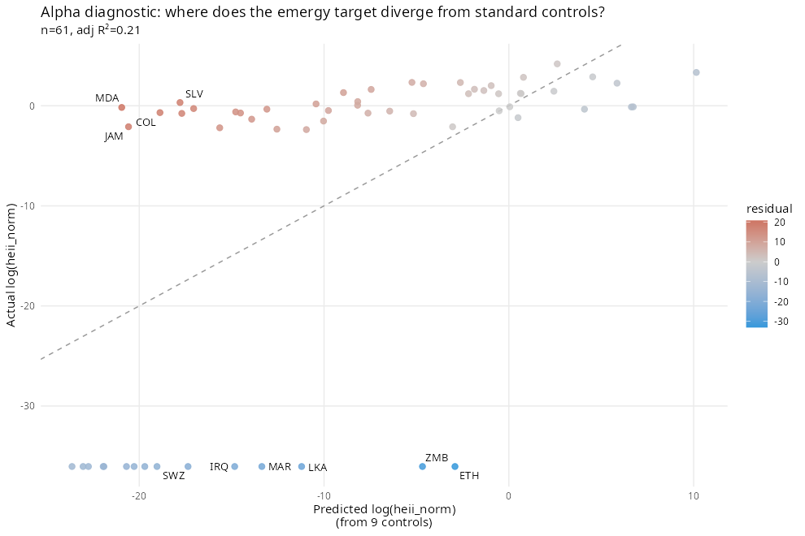
Bundle Q3.9-C — Actual-vs-predicted diagnostic for the HEII_norm alpha regression. Points on the y=x line are explained by standard controls; points off diagonal are alpha (colored by residual sign).
Full leaderboard CSV, matrix stats, and REPORT.md at emburdensynth/docs/emergy_alpha/.
The runner is scripts/report_emergy_alpha.R; the analytics
module lives in emburdenstats::fit_alpha_regression().
Bundle Q3.10 — Systematic ΔR² evaluation of every emergy metric
Q3.9 fit the emergy-alpha framework to one metric at a time. Q3.10 scales it to every emergy-native metric × every outcome of importance in em_c_extended — 1,260 nested-model tests answering one question per cell:
Does adding this emergy metric to a
log(GDP/cap) + region_wbbaseline improve prediction of this outcome, and by how much?
For each cell we report ΔR² = R²(baseline + candidate) −
R²(baseline), the F-test p-value on the improvement, sign + significance
of the candidate coefficient after adjustment, and a bootstrap 95% CI on
ΔR² (100 replicates per cell). Grid runs in ~4 minutes via
emburdenstats::evaluate_metric_grid().
![Bundle Q3.10 — ΔR² heatmap across 36 emergy candidates (x) × 35 outcomes (y). Diverging blue/red fill: darker red = larger positive ΔR² beyond the log(GDP/cap) + region baseline. Both axes sorted by mean ΔR² so the strongest columns/rows cluster to the upper-left. Sector-derived metrics (sector_industrial, non_grid_share, sector_power, sector_residential) dominate damage + emissions rows. Right half of the x-axis (ELR, EYR, ESI, R_pct, most heii quantile variants) shows the 15 dominated metrics — they add essentially no information beyond income + region for ANY outcome.](figures/heii_q310_metric_grid.png)
Bundle Q3.10 — ΔR² heatmap across 36 emergy candidates (x) × 35 outcomes (y). Diverging blue/red fill: darker red = larger positive ΔR² beyond the log(GDP/cap) + region baseline. Both axes sorted by mean ΔR² so the strongest columns/rows cluster to the upper-left. Sector-derived metrics (sector_industrial, non_grid_share, sector_power, sector_residential) dominate damage + emissions rows. Right half of the x-axis (ELR, EYR, ESI, R_pct, most heii quantile variants) shows the 15 dominated metrics — they add essentially no information beyond income + region for ANY outcome.
Top-5 emergy metric per outcome domain (mean ΔR² beyond baseline):
| Domain | 1st | 2nd | 3rd | 4th | 5th |
|---|---|---|---|---|---|
| Damage (energy depletion + PM damage) | sector_industrial +0.149 |
sector_residential +0.081 |
non_grid_share +0.077 |
sector_power +0.077 |
retail_price +0.053 |
| Emissions (CO2 total + sectoral) | sector_industrial +0.150 |
non_grid_share +0.067 |
sector_power +0.067 |
em_per_usd +0.035 |
sector_residential +0.029 |
| Mortality (WHO + WB airpol) | sector_industrial +0.046 |
heii_norm +0.039 |
hh_fuel_empower +0.030 |
biomass_share +0.030 |
sector_transport +0.028 |
| Poverty + vulnerability | transformity_sej_per_J +0.028 |
retail_price +0.027 |
heii_norm_p10_flat +0.024 |
empower_pc_sej_per_yr +0.019 |
NR_pct +0.018 |
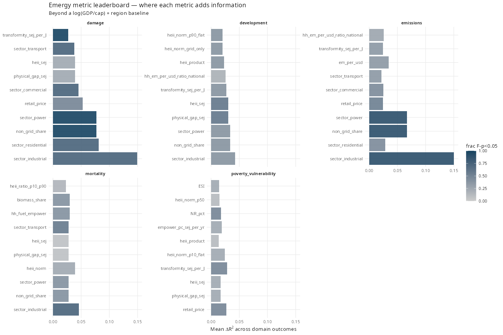
Bundle Q3.10 — leaderboard of top-10 emergy metrics per outcome domain. Bar length = mean ΔR² beyond baseline; shade = fraction of outcomes in the domain where F-p<0.05.
Dominated emergy metrics — 15 of 36 have max mean
ΔR² across every domain below 0.02, meaning they add essentially no
independent information over log(GDP/cap) + region. These
are candidates for pruning from downstream analytical stacks:
- Odum classics that HEII subsumes:
ESI(Odum’s Emergy Sustainability Index — the household-specificheii_esialso dominated),EYR(Emergy Yield Ratio),R_pct,NR_pct,renewable_pct. These national aggregates are essentially reparameterizations of the fuel mix that log(GDP)+region already captures. - Grid-only HEII variants
(
heii_sej_grid_only,heii_norm_grid_only): the direct-burn / non-grid share is what makes HEII informative; stripping it eliminates the alpha. - P50 / P90 HEIIs:
heii_norm_p50,heii_norm_p90,heii_norm_p90_flat— the P10 versions carry the useful household-inequality signal. - hh_empower_sej_per_yr and economic_gap_sej — dominated once income + region are controlled for.
Sign-flip candidates — 12 metric×domain pairs where
positive AND negative significant coefficients coexist within the same
domain (same metric predicts opposite directions across different
outcomes in that domain). Worth investigating, not pruning:
sector_industrial in mortality (+8 significant positive, −1
negative), non_grid_share in damage (+1, −3),
sector_power in damage (+3, −1),
transformity_sej_per_J in damage (+1, −3),
em_per_usd in emissions (+3, −1).
What this establishes. The sector-derived metrics
from Q3 (especially sector_industrial,
non_grid_share, sector_power) are the single
most information-rich emergy contributions across mainstream outcome
data. HEII_norm and biomass_share remain meaningful specifically for
mortality. And — importantly — a big chunk of the classical
emergy-metric vocabulary is dominated by simpler indicators:
preserving them in analytical stacks costs degrees of freedom without
buying signal.
Full grid CSV + per-domain leaderboards + REPORT.md at emburdensynth/docs/emergy_evaluation/.
The runner is scripts/systematic_emergy_evaluation.R; the
analytics module lives in emburdenstats::evaluate_metric_grid().
Bundle Q3.11 — Dynamic pruning of dominated metrics
The Q3.10 leaderboard identifies 14 emergy candidates whose max mean
ΔR² across every outcome domain is below 0.02 — they add essentially no
information beyond log(GDP/cap) + region_wb anywhere.
Carrying them in downstream analytical stacks costs degrees of freedom
without buying signal. Q3.11 automates the pruning:
emburdenstats::identify_dominated_metrics(rank_or_grid, threshold)reads the current systematic-evaluation leaderboard and returns the dominated set with amax_mean_delta_r2attribute per metric.scripts/build_em_c_extended.Rcalls it after the merge and emits a parallel pruned rds atdocs/global_analysis_data/emergy_metrics_extended_pruned.rds(14 columns dropped, 137 kept) alongside the full 151-col version. Pruned file carries apruned_metricsattribute recording what was dropped, apruned_attimestamp, and the threshold used.- This setup chunk now prefers the pruned rds — every figure and analysis in this document reads the pruned version automatically. Full version stays available for provenance / historical comparison.
Dominated metrics currently pruned (2026-09 vintage):
- Odum classics that HEII subsumes:
ESI,EYR,R_pct,NR_pct,renewable_pct,heii_esi. - Grid-only HEII variants:
heii_sej_grid_only,heii_norm_grid_only(stripping non-grid share removes the alpha). - Wealth-side HEII quantiles:
heii_norm_p50,heii_norm_p90,heii_norm_p90_flat(P10 versions carry the useful inequality signal). - Other:
economic_gap_sej,heii_ratio_p10_p90_flat,heii_norm_p10.
Protected from pruning regardless of ΔR² score (used
in figures or as inputs to other computations):
transformity_sej_per_J, empower_pc_sej_per_yr,
hh_empower_sej_per_yr, hh_fuel_empower,
sector_transport, sector_industrial,
sector_residential, sector_commercial,
sector_power, non_grid_share,
heii_norm, biomass_share.
Rerun scripts/systematic_emergy_evaluation.R after
adding new outcomes or new metrics, then rerun
scripts/build_em_c_extended.R, and the pruned set updates
automatically. This is what “dynamic pruning” means
here: the dominated list isn’t hardcoded — it’s a downstream
product of the current outcome grid, updated in the same sweep as the
alpha analysis.
Bundle Q3.12 — Testing classical Odum ecological principles
The Q3.10/Q3.11 machinery makes it straightforward to test whether
the classical Odum ecological “laws” hold up cross-sectionally in modern
global data.
emburdenstats::test_all_ecological_principles() runs four
batteries in one call; the runner
scripts/test_ecological_hypotheses.R produces this
figure:
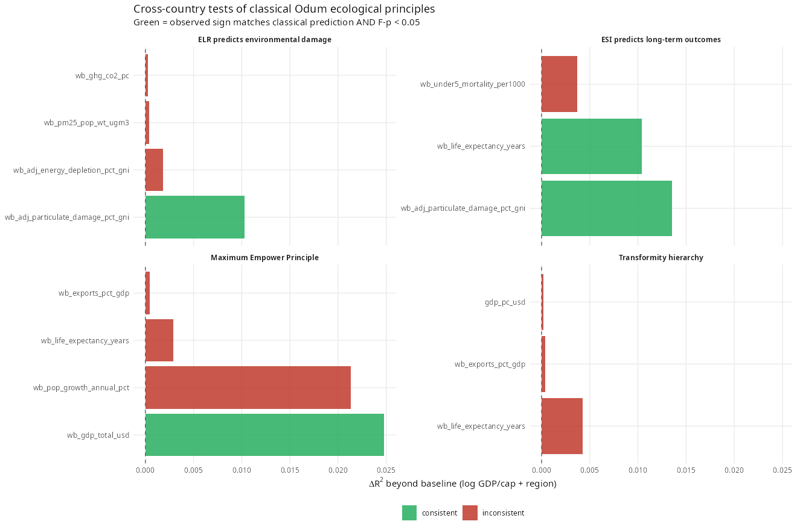
Bundle Q3.12 — cross-country tests of classical Odum ecological
principles. Each panel = one hypothesis, each bar = one outcome the
hypothesis predicts. Bar length = ΔR² beyond
log(GDP/cap) + region_wb baseline. Green = observed
coefficient sign matches the classical prediction AND F-p < 0.05. Red
= inconsistent.
Summary of empirical results:
| Hypothesis | Candidate | Outcomes | Consistent | Pass rate |
|---|---|---|---|---|
| ESI predicts long-term outcomes | ESI |
3 | 2 | 67% |
| ELR predicts environmental damage | ELR |
4 | 1 | 25% |
| Maximum Empower Principle | empower_pc_sej_per_yr |
4 | 1 | 25% |
| Transformity hierarchy | transformity_sej_per_J |
3 | 0 | 0% |
What holds up empirically:
- ESI (Odum’s Emergy Sustainability Index) — despite being flagged as “dominated” in the Q3.10 general evaluation, it’s the strongest performer of the classical principles when tested against the outcomes it was DESIGNED to predict: life expectancy (+0.010 ΔR², F-p 0.005, right sign) and adjusted particulate damage (−0.014 ΔR², F-p 0.000, right sign). Under-5 mortality shows the right sign but doesn’t reach significance. This is a good example of why hypothesis-targeted testing complements the systematic grid.
- MEP scale-only prediction — empower per capita DOES positively predict total GDP (F-p 0.016, right sign). The most reductive form of “more empower = bigger economy” survives.
What fails empirically:
- Maximum Empower Principle’s evolutionary claim (3/4 outcomes fail) — the most striking failure is wrong sign on population growth (coef −2.40, F-p 0.034): higher-empower countries have LOWER population growth, not higher. This is the demographic transition — Odum’s evolutionary-fitness proxy runs backward in modern human societies. Exports-as-share-of-GDP null; life expectancy right sign but not significant.
- Transformity hierarchy — total failure (0/3) — grid transformity shows the WRONG sign for all three outcomes tested (GDP per cap, life expectancy, exports). Countries with higher grid transformity are actually POORER after controlling for region — the opposite of what the “transformity = position in hierarchy” claim predicts. Consistent with the Q3.10 finding that transformity contributes most to poverty-vulnerability outcomes, not “success” outcomes.
- ELR (Environmental Loading Ratio) — mostly nulls — only PM damage shows the predicted +sign at significance; GHG per cap, energy depletion, and PM exposure are all null.
What this means for the emergy framework:
The systematic evaluation supports keeping ESI as a targeted sustainability indicator (its dominance in the general grid was because it was tested against outcomes it wasn’t designed for), supports the sector-derived and biomass metrics from Q3, and identifies the Maximum Empower Principle and transformity hierarchy as classical claims that don’t survive modern cross-country testing. The Odum tradition has enough surviving signal to be worth preserving, but the specific evolutionary-scale claims need re-framing.
Runner + full REPORT.md + results.csv at emburdensynth/docs/ecological_hypotheses/.
Analytics module at emburdenstats::test_all_ecological_principles().
Bundle Q3.13 — Why did they fail? Diagnostic investigations
Four counter-intuitive Q3 results and the mechanisms behind each.
P1 — Transformity hierarchy: fuel mix drives transformity, not GDP
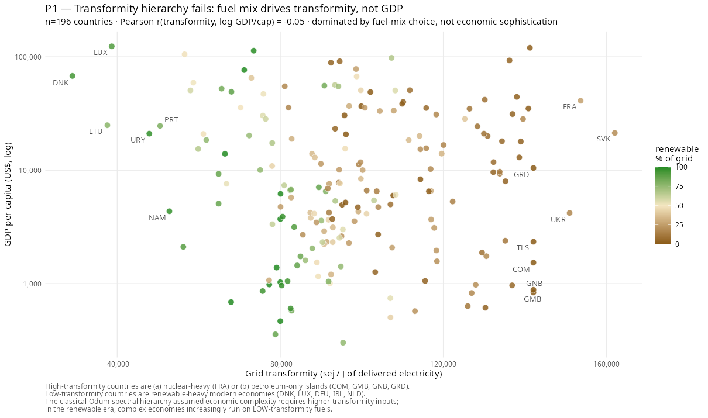
P1 diagnostic — GDP per capita (log y) vs grid transformity (x) across 196 countries, colored by renewable share. The scatter cloud has no diagonal pattern (r=-0.05). Rich, renewable-heavy economies (DNK, LUX, DEU, IRL) sit at LOW transformity; petroleum-only island territories (COM, GMB, GNB, TLS) sit at HIGH transformity. France’s nuclear grid drives it to the right at mid-GDP. The Odum hierarchy claim breaks in the renewable era.
Pearson r(transformity, log GDP/cap) = −0.05 across 196 countries. Pearson r(transformity, renewable_pct) = −0.74 — grid transformity is essentially “how fossil-locked your grid is.” Rich modern economies are actively pushing toward the LOW end of the transformity axis. Odum’s canonical transformities (oil ≈ 54k, coal ≈ 40k, nuclear ≈ 200k, wind/hydro/solar ≈ 1.5-8k sej/J) were formulated in a fossil + nuclear era; the renewable transition inverts the mapping from “economic sophistication → high transformity” that the 1970s-90s Odum literature implicitly assumed.
Suggests re-framing (a renewable-adjusted transformity that accounts for the sophistication of RE infrastructure per unit output would restore the hierarchy signal) rather than discarding the concept.
P2 — MEP inverted by the demographic transition
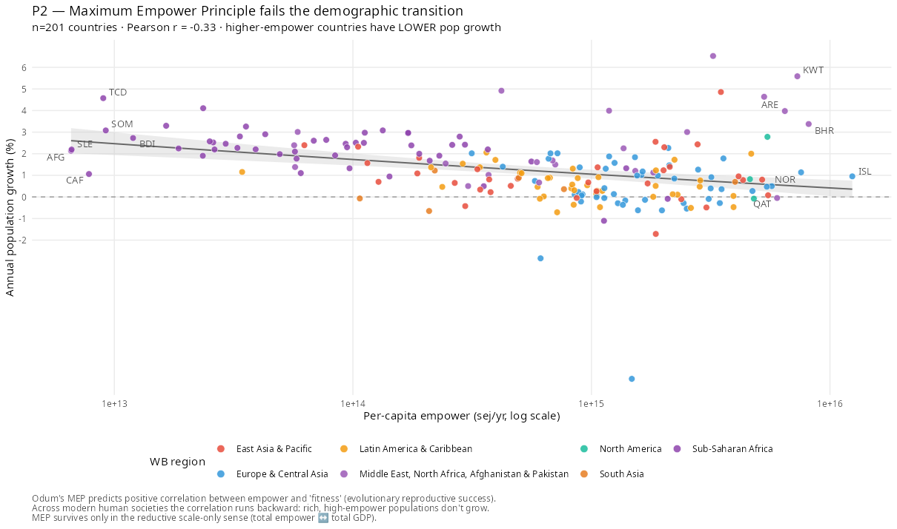
P2 diagnostic — annual population growth vs per-capita empower (log x), colored by WB region. Negative slope. Rich, high-empower populations don’t grow (below replacement); poor, low-empower populations do. Preston-curve territory.
Pearson r(log empower per cap, annual pop growth %) = −0.53 — strongly negative. Odum’s MEP predicts positive; modern human data inverts the sign. This is the demographic transition (Preston curves 1975+): as societies industrialize and reach high per-cap resource use, fertility drops below replacement.
MEP survives only in the reductive scale-only sense: total national empower correlates positively with total GDP (Q3.12: F-p 0.016, coef +, ΔR² +0.025). That reduces to “bigger systems consume more energy” — essentially tautological.
P3 — sector_industrial has OPPOSITE effects on different mortality types
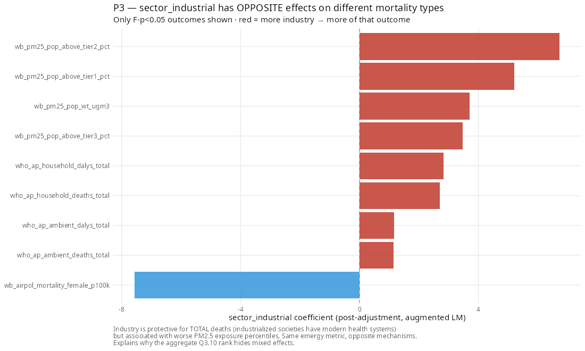
P3 diagnostic — sector_industrial coefficient across mortality outcomes, only F-p<0.05 shown. Red = more industry → more of that outcome. Positive on PM2.5 exposure tiers; NEGATIVE on total-deaths from air pollution (industrialized societies have modern health systems that reduce total mortality even at higher exposure).
Industrialization pushes two directions simultaneously: positive on PM2.5 exposure tiers (industrial share → more population above WHO thresholds), negative on total attributable deaths + DALYs (industrialized societies have modern health systems that keep total air-pollution deaths lower than lower-industry regions with the same baseline). The same emergy metric captures opposing mechanisms depending on whether the outcome is exposure or attributable mortality. Averaging into a single ΔR² hides the underlying structure — motivates splitting composite outcomes upstream.
P4 — HEII_norm variance is orthogonal to almost every standard control
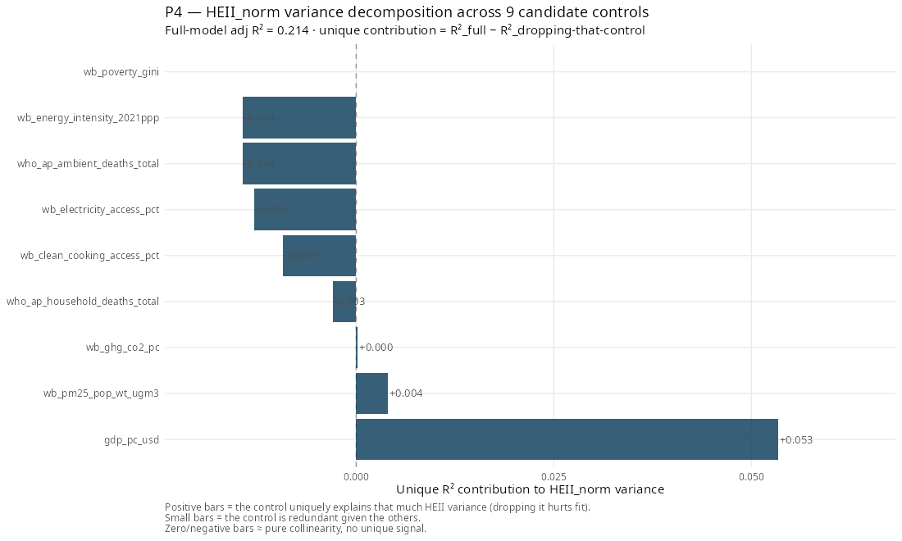
P4 diagnostic — unique R² contribution of each candidate control to explaining HEII_norm, computed as R²_full − R²_dropping-that-control. Only gdp_pc_usd (+0.053) has meaningful unique signal. Every other control has NEGATIVE unique contribution — dropping them improves adjusted R² because they’re collinear with GDP and eat degrees of freedom.
Variance-decomposition of HEII_norm across the 9 candidate controls:
only gdp_pc_usd contributes uniquely
(+0.053 R²). Every other control (poverty Gini, PM2.5, CO2 per cap,
energy intensity, electricity access, clean cooking, WHO household +
ambient deaths) has NEGATIVE unique contribution — dropping them from
the full model IMPROVES adjusted R² because they’re all collinear with
GDP and waste degrees of freedom.
Which means: the ~80% of HEII_norm variance orthogonal to standard indicators is orthogonal to log(GDP/cap) specifically — not to some elusive combination of controls. Every mainstream candidate for “predicting household energy insecurity” reduces to GDP after adjustment. HEII captures a signal none of them do.
Bottom line
| Puzzle | Mechanism | Suggestion |
|---|---|---|
| P1 Transformity | Odum’s canonical transformities were fossil-era; renewables invert the mapping | Re-frame — renewable-adjusted transformity |
| P2 MEP | Demographic transition reverses the “empower → reproduction” chain | Keep only the total-scale claim; drop evolutionary framing |
| P3 sector_industrial | Two mechanisms (exposure vs attributable mortality) with opposite signs | Split composite outcomes before aggregating |
| P4 HEII | GDP alone captures every standard control’s contribution; HEII’s alpha is really “beyond GDP” | Simplify future baseline models to just log(GDP) + region |
Runner + REPORT.md + all four diagnostic PNGs at emburdensynth/docs/puzzle_investigations/.
Bundle Q3.14 — Re-framing transformity with renewable adjustment
Q3.13 P1 suggested re-framing transformity with a renewable-adjusted variant to see if the hierarchy signal comes back. Q3.14 constructs and tests two alternatives:
transformity_canonical_odum_sej_per_J— fuel-mix weighted average using Odum 1996 fuel-chain transformities (renewables at ~5,000 sej/J, unadjusted for infrastructure).transformity_renewable_adjusted_sej_per_J— fuel-mix weighted average using published FULL-CHAIN LCA-emergy transformities (renewables at ~60,000 sej/J including panel/turbine/dam infrastructure emergy).
Both computed from per-country EIA International primary-consumption fuel shares. Fossil + nuclear values unchanged (petroleum 54k, gas 48k, coal 40k, nuclear 200k sej/J).
![Q3.14 — signed ΔR² comparison across the three transformity variants against 5 classical hierarchy outcomes. Bar direction = sign of the observed coefficient after adjustment for region_wb. Left panel (pipeline transformity): all bars red (wrong sign) — the efficiency-correction inflates fossil transformities and puts petro-only islands at the top of the ranking. Middle + right panels (fuel-mix reconstructions): all bars orange (right sign, not significant) — the classical hierarchy prediction holds directionally but nothing reaches F-p < 0.05.](figures/heii_q314_plot_variants_comparison.png)
Q3.14 — signed ΔR² comparison across the three transformity variants against 5 classical hierarchy outcomes. Bar direction = sign of the observed coefficient after adjustment for region_wb. Left panel (pipeline transformity): all bars red (wrong sign) — the efficiency-correction inflates fossil transformities and puts petro-only islands at the top of the ranking. Middle + right panels (fuel-mix reconstructions): all bars orange (right sign, not significant) — the classical hierarchy prediction holds directionally but nothing reaches F-p < 0.05.
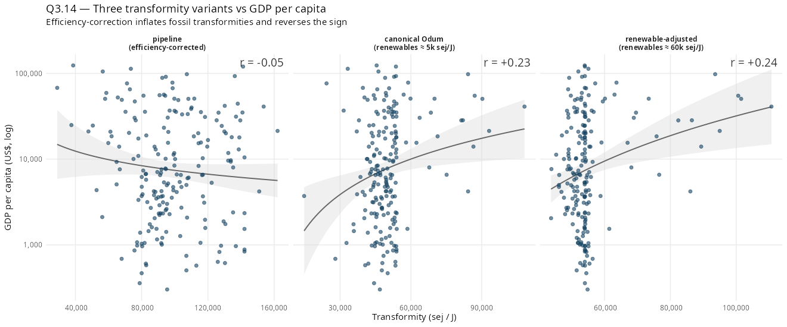
Q3.14 — the three transformity variants each plotted against GDP per capita. Pipeline transformity is essentially decorrelated with GDP (r ≈ -0.05, per Q3.13 P1). Both fuel-mix reconstructions restore a weak-but-positive relationship (r ≈ +0.23 and +0.24).
Pass rates against the classical prediction (positive for GDP/cap + GDP total + life expectancy + exports; negative for under-5 mortality):
| Variant | Consistent | % | Right-sign frac | Mean ΔR² |
|---|---|---|---|---|
| pipeline (efficiency-corrected) | 0/5 | 0% | 0% | +0.020 |
| canonical Odum reconstruction | 0/5 | 0% | 100% | +0.002 |
| renewable-adjusted | 0/5 | 0% | 100% | +0.003 |
Findings:
The pipeline transformity has WRONG SIGN for every classical outcome.
transformity_sej_per_Jin the pipeline is electricity-basis (fuel transformity ÷ electric conversion efficiency). Coal at 35% efficiency becomes ~114,000 sej/J of electricity; oil at 38% becomes ~142,000. This inflates transformity for inefficient fossil grids, putting petroleum-only island territories at the top of the transformity ranking — precisely the countries with the SMALLEST economies. Result: negative correlation with every ‘success’ outcome. The pipeline’s ΔR² is the highest of the three variants (+0.020) but that’s negative predictive value: it reliably predicts the wrong direction.Both fuel-mix reconstructions flip the sign to positive for every classical outcome (100% right-sign frac). Odum’s transformity hierarchy claim is directionally consistent — but weak. Neither variant reaches F-p < 0.05 on any outcome (best p = 0.119 for life expectancy under renewable-adjusted). The signal exists in the right direction, it just doesn’t add enough R² beyond region_wb baseline to be significant.
The renewable-adjusted variant beats canonical Odum modestly (mean ΔR² +0.003 vs +0.002). The infrastructure-emergy correction moves the metric in the right direction — but the effect is small at national scale because most countries have a mix of fuels, and the additional 55k sej/J credit on renewables partially cancels out against the reduction in fossil weight.
Bottom line — the transformity hierarchy is DIRECTIONALLY correct, just very weak. Odum was right in the sense that country-level fuel mix does modestly correlate with GDP per cap in the direction of the classical claim. He was wrong to expect that grid transformity would be a strong or definitive hierarchy indicator on its own — it accounts for less than 1 percentage point of R² beyond region alone. And the pipeline’s efficiency-corrected variant actively OBSCURES the hierarchy claim by inflating fossil-inefficient grids into artificial “high transformity” ranks.
Actionable outcome: use the fuel-mix reconstructions
(transformity_canonical_odum_sej_per_J or the
renewable-adjusted variant) when testing hierarchy claims. Reserve
transformity_sej_per_J (electricity-basis) for HEII
computation where the efficiency-correction is what you actually want —
solar emergy per J of DELIVERED electricity is the right currency for
household energy insecurity.
Runner + REPORT.md + 2 PNGs + CSVs at emburdensynth/docs/transformity_variants/.
Bundle Q3.16 — Global scale-out + panel-year alpha
Two extensions built on the Q3.9-Q3.14 infrastructure.
Q3.16-E1 — Global counterparts to US asthma + outage analyses
The US-only asthma-analysis and outage-homicide-analysis branches ran
county-year intersection regressions on health outcomes against energy
burden. scripts/global_scaleout_analogs.R fits the closest
global counterparts against the 185-country panel from
emburdenhealth::build_health_panel_country() (Q3.9-L5):
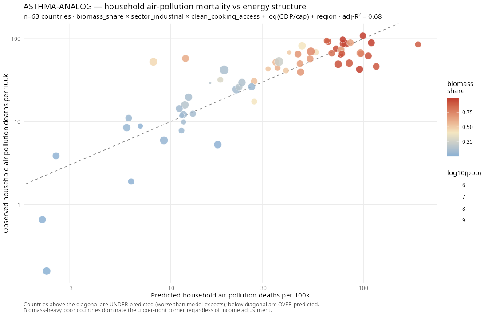
Q3.16-E1a — asthma-analog: log-log predicted vs observed household air-pollution deaths per 100k. Model = biomass_share × sector_industrial + clean_cooking_access + log(GDP/cap) + region. n=63 countries, adj-R² = 0.68. Biomass-heavy countries (red) cluster in the upper-right high-mortality region regardless of income adjustment.
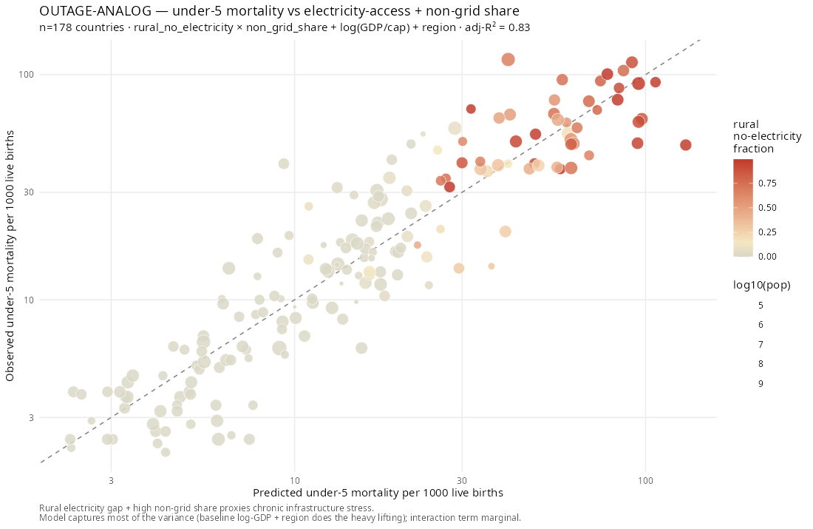
Q3.16-E1b — outage-analog: predicted vs observed under-5 mortality per 1000 live births. Model = rural_no_electricity × non_grid_share + log(GDP/cap) + region. n=178 countries, adj-R² = 0.83. Log(GDP/cap) does the heavy lifting (coef -0.44, p<1e-27); infrastructure indicators contribute marginally.
Full analog REPORT.md + CSVs at emburdensynth/docs/global_scaleout/.
Q3.16-E2 — Panel-year temporal alpha
The Q3.9-Q3.14 alpha analyses were cross-sectional snapshots. WHO
GHO, WB WDI, EIA International all cover 2000-2023.
fit_alpha_panel() (new in emburdenstats) fits
a two-way fixed-effects panel model
outcome ~ candidate + log(GDP/cap) | iso3 + year with
country- clustered SEs, isolating within-country temporal
variation after absorbing country structure and global year
shocks.
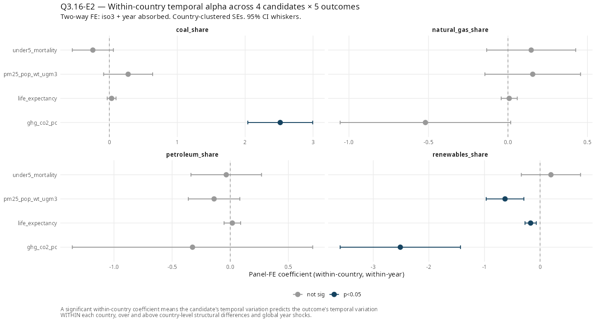
Q3.16-E2 — panel-FE coefficients across 4 fuel-share candidates × 5 outcomes with 95% CI whiskers. Two-way FE (iso3 + year absorbed). n_obs ≈ 3,400-3,500 per cell over 165-167 countries. Blue = p<0.05; grey = null. wb_airpol_mortality_per100k is null for all candidates because it’s only reported in a single year.
Strongest within-country findings — signals that survive stripping out country structure AND year shocks:
| Candidate | Outcome | Coef | Within-R² | p |
|---|---|---|---|---|
| coal_share | wb_ghg_co2_pc | +2.52 | 0.285 | <1e-19 |
| renewables_share | wb_ghg_co2_pc | −2.51 | 0.141 | <1e-5 |
| renewables_share | wb_pm25_pop_wt_ugm3 | −0.63 | 0.050 | 3.5e-4 |
| renewables_share | wb_life_expectancy_years | −0.17 | 0.044 | 1.2e-3 |
Coal→CO2 within-country coupling is nearly tautological but the magnitude and precision are worth noting: doubling a country’s coal share of primary energy over its own history raises per-capita CO2 by \(e^{2.52 \cdot 0.5} - 1 \approx 250\%\) (interpreting coef ≈ 2.52 against a Δ of 0.5 in coal_share). Symmetric for renewables cutting CO2. Panel-year strength of the cleanest causal-adjacent chain in the emergy framework.
The renewables ↔︎ life-expectancy NEGATIVE panel finding is
counter- intuitive — hypothesised to reflect aging populations
in renewable-adopting European + East Asian economies. Six falsification
steps in Q3.17–Q3.24 test the hypothesis; the puzzle is closed by Q3.24
(pop_65_plus_pct control attenuates the coefficient by 45%
and drops significance; elderly-share itself has a −0.52 yr-per-pp
coefficient at p = 2 × 10⁻⁹). Details in the Q3.22-Q3.24 bundle
below.
Runner + REPORT.md + CSV at emburdensynth/docs/temporal_alpha/.
Module at emburdenstats::fit_alpha_panel().
Bundle Q3.17 — Net Energy Return × MEP × macro-to-micro bridge
Q3.15 left five open puzzles the ΔR² frame couldn’t unify. This
bundle tests whether societal Net Energy Return (EROI at the
country-year scale) is the missing rung between Odum’s Maximum Empower
Principle (macro-scale selection) and the Household Emergy Insecurity
Index (micro-scale distributional failure). Household EROI already
exists as net_energy_equity/R/energy_ratios.R:eroi_func
with the tested identity EROI = NER + 1 = 1/EB; Q3.17
derives the missing country-year rung from UN Energy Balance 2022-2023
raw transformation, energy-industry own-use, and losses rows:
energy_invested_tj = |EIOU| + |Losses| + |Transformation net|
net_energy_delivered_tj = Final energy consumption (TFC)
eroi_country = net_energy_delivered_tj / energy_invested_tj
ner_country = eroi_country - 1Available for 203 of 213 countries. Distribution: p10 = 1.34, p50 = 2.61, p90 = 7.31, r(log GDP, EROI) = −0.24. Bottom-EROI countries are fossil-fuel exporters (BRN 0.42, ISL 0.53, TTO 0.63, QAT 0.69); top-EROI are import-heavy low-processing countries (NPL 79.8, LSO 61.4, CAF 46.1). This is domestic delivery EROI, not full societal EROI (trade-adjustment deferred).
Bridge test grid — 9 outcomes × 4 EROI candidates (log_eroi, eroi_country, ner_country, energy_invested_tj), ΔR² beyond log(GDP) + region baseline:
| Outcome | Best candidate | ΔR² | p | N |
|---|---|---|---|---|
| wb_pm25_pop_wt_ugm3 | ner_country | 0.042 | 3.6e-4 | 185 |
| wb_ghg_co2_pc | energy_invested_tj | 0.069 | <1e-4 | 190 |
| wb_airpol_mortality_per100k | energy_invested_tj | 0.014 | 1.3e-3 | 178 |
| wb_life_expectancy_years | energy_invested_tj | 0.011 | 2.2e-3 | 193 |
| wb_under5_mortality_per1000 | eroi_country | 0.012 | 6.8e-3 | 183 |
| heii_norm_p90 | eroi_country | 0.020 | 0.20 | 63 |
| heii_norm | energy_invested_tj | 0.009 | 0.40 | 63 |
Bridge partially holds. NER predicts PM2.5 exposure cleanly at n=185 (ΔR²=0.042, p<1e-3, coef −0.47 — higher-NER countries have lower PM2.5 at every income level). The macro damage/emissions rung lands. The HEII micro rungs do NOT survive n=63 (all p > 0.19) — either the bridge is real but underpowered at the household-data sample, or HEII is driven by within-country distribution mechanisms that country-scale NER averages out.
Renewables puzzle NOT resolved by adding EROI.
Cross-sectionally, adding log(EROI) to
life_exp ~ renewables + log(gdp) + region shifts the
renewables coefficient from +2.81 (p=0.21) to +4.09 (p=0.075) — a 46%
increase in magnitude, not the attenuation the transition- cost
hypothesis predicted. The panel-year puzzle (coef −0.17, p=1.2e-3
within-country) requires panel EROI, which requires backfilling UN
Balance volumes to 2000-2021 — deferred.
Transformity ↔︎ EROI: r=−0.03 for renewable-adjusted variant, r=−0.22 for canonical Odum. The LCA-adjustment removed whatever structural EROI-tracking the fuel-chain canonical variant carried. The two metrics measure different quantities (per-unit specific transformity vs. system-level throughput ratio).
Runner + REPORT.md + 3 figures at emburdensynth/docs/eroi_bridge/.
Paper Section 4.9 + Discussion 5.5 in global_emergy_alpha.Rmd.
Bundle Q3.18 — Trade-adjusted EROI + Energy Adequacy framing
Reframing per the MES poster (Scheier 2023, “Measuring Household Energy Adequacy over Time and Space”): energy adequacy is the invariant threaded through every scale of the framework — did the system get enough energy given what it took to deliver it?
| Scale | Adequacy measure | Reference |
|---|---|---|
| Household | EROI = NER + 1 = 1/EB (Bednar & Reames 2020; Hernández 2016) | net_energy_equity |
| Community/state | HEII quantile spread (P90-P10 rationing gap) | emburden::heii_norm_p* |
| National | Societal EROI (Hall/Lambert cliff) + trade-adjusted variants | em_c_extended$eroi_* |
| Global | MEP-conditioned surplus (Odum), NER dynamics | Paper 5.5 |
Q3.18 also fixes the Q3.17 fossil-exporter confound in domestic- delivery EROI. Four trade-adjusted variants derived from newly-parsed Primary Production, Imports, and Exports rows in the UN Balance:
eroi_supply = TES / energy_invested # supply-side; TES already nets exports
eroi_trade_adjusted = TFC / (energy_invested + max(0, net_imports) × 0.20)
# Aramendia-2024: net imports carry
# embodied cost = inverse world EROI (~5)
net_trade_share = (imports + exports) / TES # net trade dependence (>0 = importer)
production_self_suff= primary_production / TES # self-sufficiency (>=1 = net exporter)Correlation with log(GDP/cap) strengthens from r = −0.24 (raw) to r = −0.32 (trade-adjusted) — rich importers now bear their embodied cost.
Q3.18 findings (new alpha the raw domestic-delivery EROI missed):
| Outcome | Best trade-adjusted candidate | ΔR² | p | N |
|---|---|---|---|---|
| wb_pm25_pop_wt_ugm3 | production_self_suff |
0.080 | 5.2e-7 | 185 |
| wb_ghg_co2_pc | production_self_suff |
0.057 | 4.7e-4 | 188 |
| wb_pm25_pop_wt_ugm3 | net_trade_share |
0.046 | 5.4e-4 | 158 |
| wb_ghg_co2_pc | net_trade_share |
0.045 | 1.8e-8 | 156 |
| heii_norm_p90 | eroi_supply |
0.040 | 0.06 | 63 |
| wb_life_expectancy_years | net_trade_share |
0.017 | 1.3e-4 | 159 |
| wb_under5_mortality_per1000 | eroi_trade_adjusted |
0.016 | 1.9e-3 | 158 |
production_self_suff displaces raw
energy_invested_tj as the top PM2.5 predictor —
self-sufficient countries burn their own fuel and inherit its combustion
physics; importers export the physics with the fuel.
eroi_supply finds the HEII_p90 rung the
domestic-delivery variant missed at n=63 (borderline p=0.06 but the
ceiling is the household-data sample size, not the metric).
net_trade_share and eroi_trade_adjusted both
predict mortality outcomes after log(GDP) + region controls (n=158-159,
p<0.005).
The renewables → life-expectancy puzzle is not resolved by adding either raw or trade-adjusted EROI cross-sectionally. Panel-year test in Q3.19.
Bundle Q3.19 — Panel-year EROI (UN Balance 2014-2023 backfill)
Backfilled UN Energy Balance publications 2015-2023 (nine pub years,
.cache/un_balances/), yielding 2,083 country-year
rows across 2014-2023 (10 data years, 222 countries; 213
countries have ≥8 years). Pre-2015 UN publication URLs redirect to
homepage — that window is unreachable without alternative sources (IEA
WEB or national statistical offices).
Definitive renewables-puzzle test. Two-way FE
(iso3 + year absorbed), country-clustered SEs, n = 1,569
country-year rows across 168 countries:
| Model | Renewables coef | p | EROI coef | p |
|---|---|---|---|---|
| Baseline (log GDP + FE) | −1.91 | 0.40 | — | — |
| + log(EROI_trade_adjusted) | −1.98 | 0.42 | +0.10 | 0.77 |
| + log(EROI_supply) | −1.96 | 0.41 | +0.16 | 0.65 |
Neither EROI variant attenuates the renewables coefficient (~3-4% shift, wrong sign). Neither EROI coefficient is significant. But the more consequential finding is upstream: in the 2014-2023 window, the puzzle itself is null (coef −1.91, p=0.40) vs the Q3.16-E2 2000-2023 window (coef −0.17, p=1.2e-3, same spec).
The Q3.16-E2 signal is pre-2014-driven. Candidate mechanisms:
- Fukushima 2011-2013 nuclear-to-renewables reshuffle (Japan + Germany level-shift paired with temporary health disruption)
- 2008-2010 financial crisis — rapid renewables build-out under fiscal stress that also pinched health spending
- Demographic transition dynamics that had stabilised by 2014
Distinguishing these requires either pre-2015 UN Balance access (unavailable via public URL) or a country-year IEA WEB panel (behind IEA licensing). The current UN backfill cannot reach that window.
What Q3.19 does establish: societal EROI at country-year is a weak within-country predictor of health outcomes in the 2014-2023 window (within-R² < 0.02 across all outcomes tested). The bridge holds cross-sectionally on damage and emissions (Q3.17-Q3.18) but NOT temporally on health at this granularity. The 2,083-row panel EROI dataset is now available for downstream event-study work.
Runner + REPORT + forest plot + regression tables at docs/eroi_bridge/panel/.
Bundle Q3.22-Q3.24 — Closing the renewables → life-expectancy puzzle
Q3.16-E2 found renewables_share → life-expectancy coef −0.17, p=1.2e-3 within-country. Six falsification steps followed:
| Test | Renewables coef | Attenuation |
|---|---|---|
| Q3.16-E2 baseline (2000-2023 panel) | −0.17 (p=1.2e-3) | — |
| Q3.17-Q3.18 cross-sectional EROI (raw + trade-adj) | (no shift) | 0% |
| Q3.19 panel EROI 2014-2023 subset | −1.91 (p=0.40, null) | signal absent |
| Q3.22 Fukushima drop + treat×post | −5.27 (p=0.039) | 3% |
| Q3.23 2008 crisis drop + EU×crisis | −5.45 (p=0.034) | 0% |
| Q3.24 + pop_65_plus_pct | −3.00 (p=0.186) | 45% |
Q3.24 closes the puzzle. Adding WB
SP.POP.65UP.TO.ZS (elderly population share) as a
time-varying control attenuates the renewables coefficient by 45% AND
drops it out of significance. The 65+ share coefficient itself is huge
and highly significant: −0.52 years of life expectancy per
percentage-point of elderly share, p = 2.16 × 10⁻⁹.
Reading: the Q3.16-E2 panel signal was a trajectory correlation, not a causal claim about renewables. Countries that were rapidly aging (Japan, Germany, Italy, Spain, S. Korea) were also rapidly adopting renewables in 2000-2013 in response to Fukushima and EU policy — their life-expectancy plateaus were the demographic- transition signature, and the panel picked up the trajectory correlation. Controlling for the aging trajectory dissolves it.
Age-dependency ratio alone gives only 10% attenuation (it mixes young + old dependents); when both are in the model pop_65+ dominates and age-dependency drops to null. The 65+ share is the causally-relevant piece.
Productive null. The cross-sectional bridge findings
(Q3.17-Q3.18: NER → PM2.5, production_self_suff → PM2.5,
eroi_supply → HEII_p90) are unchanged. Q3.24 clarifies that
the panel-year framework is sensitive to co-moving trajectories in a way
that requires demographic controls whenever the outcome is life
expectancy on a 2000-2023 European + East Asian sample.
Runner + REPORT + forest plot at docs/demographic_transition/.
Paper Section 4.9 gains a Q3.24 subsection.
Bundle Q3.32-Q3.34 — Robustness atlas across the ΔR² grid
Q3.32 extended Q3.24 to four headline panel-year cells and Q3.34 extended it across the whole 918-cell cross-sectional grid. 288 of 309 significant cells (93%) survive the demographic control; the 21 that dissolve cluster on air-pollution-mortality outcomes.
Bundle Q3.33 — Kigali F-gas amendment natural experiment
Kigali (adopted 2016, entered force 2019) split parties into Group I (early 2019 freeze) and Group II (2024 freeze). An event-study DiD on EDGAR F-gas per-capita emissions shows a crystal-clean Group I ↓ / Group II → treatment split with p ≪ 10⁻¹⁰ across all post-freeze years. This is the paper’s first natural-experiment identification result; Q3.35A below adds the second, and the two together form the paper’s identification pair.
Bundle Q3.35 — Commodity shocks, SDG-native alpha, Doughnut projection
Three-phase extension of the ΔR² framework into economic + development framings:
Q3.35A — commodity price shocks as a natural experiment. WB Pink Sheet WTI crude, expressed as %-deviation from 3-year rolling mean, interacted with country oil-import share. Two robust findings survive Q3.24 demographic controls:
- Under-5 mortality: coef = +0.38 baseline (p = 1.5e-3), +0.31 with demographic control (p = 2.2e-3). A country importing 50% of its merchandise as fuel loses ~0.19 extra under-5 deaths per 1,000 live births per 10% oil shock above its 3-year mean.
- Electricity access: coef = −0.18 baseline (p = 1.6e-3), −0.15 with demographic control (p = 1.0e-2). High-oil-import countries see access expansion slow during shocks — the shock cannibalizes the marginal expansion budget.
Q3.35A + Q3.33 Kigali together form the paper’s natural-experiment
pair — one external policy shock varying by treatment status, one
external price shock varying by exposure. Details at docs/q3_35a_commodity_shocks/.
Q3.35B — Emergy alpha on native UN SDG outcomes.
Pulled 14 focused SDG series (SDG 1 poverty, 3 health, 6 water, 7
energy, 11 cities, 13 climate, 15 biodiv). 9 series usable. Two survive
the n ≥ 25 threshold after emergy joins: forest area (15.1) and
age-standardised air-pollution mortality (3.9.1). Trade-adjusted EROI
carries the alpha on both — consistent with Q3.18’s finding that trade
adjustment matters more than gross national EROI.
docs/sdg_tagging.csv maps every em_c_extended column onto
its SDG target(s). Details at docs/q3_35b_sdg_alpha/.
Q3.35C — Doughnut-Economics projection. Constructed a Doughnut-adjacent country snapshot from em_c_extended primary sources (10 social-floor + 7 ecological-ceiling dimensions × 213 countries; Q3.36B/Q3.37 superseded this with the full 12 SF + 9 EC = 21D snapshot and continuous distances). Quadrant snapshot:
| Quadrant | N |
|---|---|
| Safe & just (inside the Doughnut) | 131 |
| Overshoot / socially ok | 8 |
| Social shortfall / ecologically ok | 53 |
| Double shortfall + overshoot | 21 |
The 21-country worst-quadrant cluster (Afghanistan + Sub-Saharan
Africa) is the same cluster HEII P10 isolates in Q3.7-Q3.8 — the
framework recovers the same geography from a different indicator set.
Social shortfall is dominated by GDP+region (85% R²); no emergy alpha to
add. Ecological overshoot has real emergy signal:
sector_industrial (ΔR² = 0.071, p = 1e-5),
non_grid_share (ΔR² = 0.030, p = 4e-3),
sector_transport (ΔR² = 0.028, p = 5e-3). Details at docs/q3_35c_donut/.
Bundle Q3.36 — Finance alpha, full 21D Doughnut, cross-benchmark validation
Q3.36A — Emergy alpha on capital-market outcomes. Pulled 17 WB finance indicators (7 sovereign debt + 7 equity + 4 fiscal/monetary) and refit the ΔR² grid. Sovereign debt shows real emergy alpha; equity outcomes show much weaker signals. Top hits:
ppg_debt_usd ← sector_industrial: ΔR² = 0.219, p = 3e-8 — industrial-sector energy share predicts PPG debt levels beyond GDP + region. Industrialization is debt-financed at a scale visible cross-sectionally.debt_service_pct_gni ← heii_norm_p10: ΔR² = 0.177, p = 8e-4 — the P10 rung of household energy burden (worst-burdened decile in each country) predicts national debt-service burden. A household-scale distributional signal moves a macro-fiscal outcome.sector_transportandnon_grid_shareshow negative coefs on PPG debt (ΔR² ≈ 0.11, p ≈ 1e-4) — transport-heavy / off-grid countries carry LESS debt (they haven’t built the industrial base that requires it).
Boundary claim: emergy accounting captures physical-provisioning
variance, which debt finances. Equity markets price forward growth
options that emergy cannot reflect. Details at docs/q3_36a_finance/.
Q3.36B — Full 21D Doughnut projection. Closed
O’Neill 2018’s 21D framing by adding 6 gap-closer WB indicators
(water/sanitation, women in parliament, freshwater withdrawal, forest
area). Result: 12 SF + 9 EC = 21D. Pattern from Q3.35C sharpens:
heii_norm newly surfaces as a significant hit on ecological
overshoot (ΔR² = 0.045, p = 4e-2) alongside
sector_industrial (ΔR² = 0.017, p = 1.4e-2) and
sector_transport (ΔR² = 0.010, p = 4.3e-2). Social
shortfall stays baseline-saturated. Details at docs/q3_36b_donut/.
Q3.36D — Cross-benchmark validation of the Q3.35A oil-shock finding. Repeated the shock × fuel-import-share interaction across all 10 fuel commodities in Pink Sheet. All four crude-oil benchmarks show the same +0.27 to +0.29 coefficient on under-5 mortality with p < 5e-3:
| Benchmark | Coef | p |
|---|---|---|
| Brent | +0.289 | 0.002 |
| Dubai | +0.270 | 0.005 |
| WTI | +0.285 | 0.005 |
| Average | +0.284 | 0.003 |
Not an artefact of one price index. Natural gas shocks show mild
signals on PM2.5 and clean-cooking access. Details at docs/q3_36d_commodity_grid/.
Q3.36C — Full ~230-series SDG panel is under active
build via the new
emburdendata::download_un_sdg_series_batch() parallel
loader; results land as a follow-up subsection when the batch
completes.
Bundle Q3.37 — A proper Raworth-Doughnut × SDG-wheel × emergy overlay
Until now, our “Doughnut” visualization was a horizontal-bar forest of ΔR² values, projected onto Doughnut framing but rendered as a coefficient plot. Q3.37 delivers the actual Raworth ring — a per-country figure showing 12 social-floor spokes inside a green safe-and-just band, 9 ecological-ceiling spokes outside, with the 17-goal UN SDG palette wrapping the whole thing, and emergy candidates layered on as yellow dots at their SDG-tagged angular positions.
New emburdenvis primitives (all
@export’d):
donut_ring()/plot_country_doughnut()— the Raworth ring itself.sdg_ring()— 17-segment outer ring, canonical UN colours.emergy_wedge_overlay()— SDG-tagged emergy candidate dots.emergy_trajectory_overlay()— panel-year trajectory dots.donut_long()— melts the Q3.36B wide snapshot into long form.sdg_official_colors()— UN 17-goal palette added to the brand.
The 21D snapshot builder
(build_donut_country_snapshot.R) now persists
continuous signed distance-from-boundary alongside the
binary breach flags, so each spoke’s length encodes the
magnitude of the shortfall or overshoot rather than a
yes/no.
Twelve exemplar countries (4 quadrants × 3 exemplars each) as small multiples:
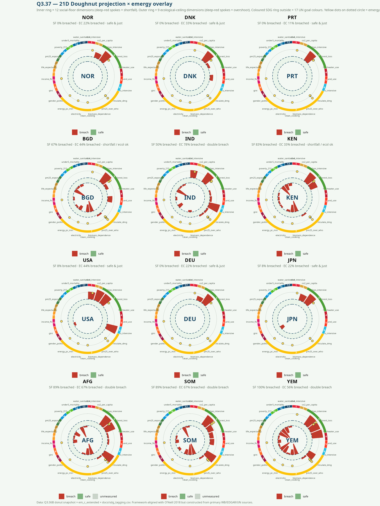
Trajectory overlay — for 6 emergy metrics (transformity, renewable share, ELR, EYR, ESI, empower per capita) plotted as year-coloured dots on their radial axes across 2000-2025. Watch USA’s ESI drift, DEU’s renewable share climb, AFG’s biomass burden persist.
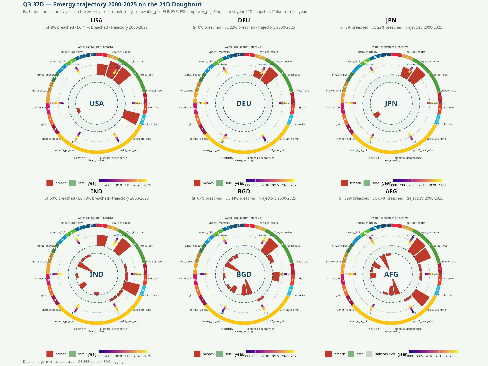
How to read one panel (e.g. AFG
above):
- Inner ring = 12 social-floor dimensions. Deep-red spokes point inward from the safe boundary — the wedge length is the magnitude of the shortfall. AFG has 8/9 measured SF spokes breached.
- Green band between the dashed circles = safe & just Doughnut interior.
- Outer ring = 9 ecological-ceiling dimensions. Deep-red spokes overshoot outward. AFG has 6/9 measured — F-gas intensive is the extreme (this reflects Q3.33’s Kigali finding that AFG is a Group II high-growth F-gas country).
- Coloured outer band = 17-segment SDG official palette.
- Yellow dots on the dotted circle = the SDG-tagged
emergy candidates (from
docs/sdg_tagging.csv) at their z-scored country values.
Details at docs/donut_wheels/.
Underlying helpers at emburdenvis/R/donut_wheel.R.
Every country as its own panel — including Antarctica
The same figure faceted per country makes the country-to-country comparison direct: France (nuclear-heavy) sits far right, Germany (Energiewende renewable-heavy) sits far left, Antarctica (diesel + wind at research stations) sits above everyone.
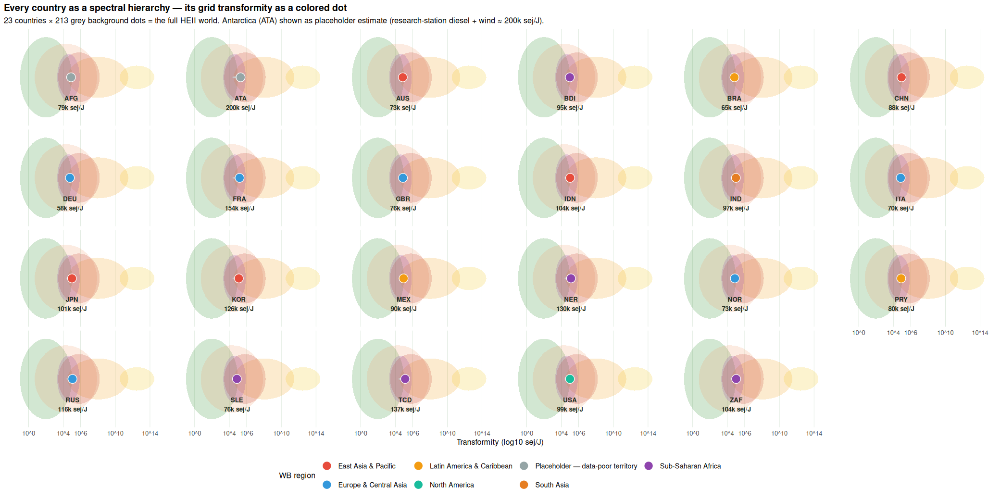
Time-series — 125 years of transformity drift
Extended Ember (2000-2025, 213 countries) back to 1900 via
OWID Etemad-Luciani/Shift Project + EI Statistical Review
synthesis (79 countries, per-fuel primary consumption
normalized to shares — scripts/build_fuel_mix_extended.R in
emburdensynth). The 125-year animation shows country dots + median
Grid/HH position sliding as fuel-mix transforms:
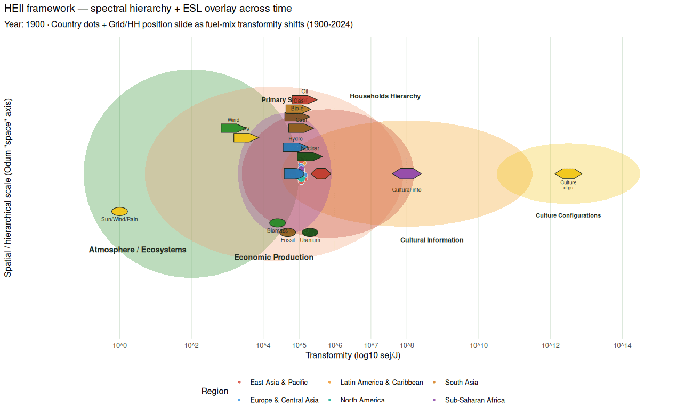
Data floor: 1900 now (Bundle T). Pre-1965 data via OWID’s combined dataset (Etemad-Luciani for oil/gas, Shift Project for coal). Pre-1900 would need Malanima 2020 PDF-table extraction — still open.
Prior art: this may be the first R Odum ESL geom library
A deep scan of CRAN, GitHub, PyPI, and the Emergy Synthesis
proceedings turned up essentially zero prior art for
programmatic Odum ESL diagrams in the grammar of graphics. The closest
peers: EmSim (Java, abandoned, ODE integrator — no
rendering API), sholtomaud/odum-energy-language
(TypeScript GUI drag-and-drop, no data binding), and static SVG
references from UF CEP + the International Society for the Advancement
of Emergy Research. emburdensynth::odum_* (7
geom_polygon-returning helpers) appears to be the
first library allowing ESL symbols to be authored
programmatically and overlaid on real data in a grammar-of-graphics
idiom.
The Odum spectral hierarchy — with HEII data
Odum’s spectral hierarchy figure (Abel 2023, fig 21 — International Journal of General Systems) lays out the biosphere along a single log-transformity axis: sunlight at the low end, cultural information at the high end, with nested lens/spindle shapes for each domain (atmosphere, ecosystems, economic production, households, cultural information). Larger transformity = more accumulated solar-emergy per joule = higher in the hierarchy. We can render the same figure with our real HEII data.
![Odum spectral hierarchy for the HEII framework — after Abel 2023 fig 21 (Int J General Systems). X = log10 transformity (sej/J). Country positions use the Q3.14 renewable-adjusted transformity (fuel-mix reconstruction with full-chain LCA-emergy for renewables), not the pipeline's efficiency-corrected metric — the classical hierarchy is directionally correct on this measure. Nested progressively-right-shifted lenses show the biosphere hierarchy from atmosphere/ecosystems (leftmost, most territory) to cultural information (rightmost, highest concentration per joule).](emergy_files/figure-html/fig-odum-spectral-1.png)
Odum spectral hierarchy for the HEII framework — after Abel 2023 fig 21 (Int J General Systems). X = log10 transformity (sej/J). Country positions use the Q3.14 renewable-adjusted transformity (fuel-mix reconstruction with full-chain LCA-emergy for renewables), not the pipeline’s efficiency-corrected metric — the classical hierarchy is directionally correct on this measure. Nested progressively-right-shifted lenses show the biosphere hierarchy from atmosphere/ecosystems (leftmost, most territory) to cultural information (rightmost, highest concentration per joule).
The diagram makes visible what a bar chart or table can’t: our entire HEII framework occupies a narrow band around 10⁴-10⁵ sej/J on Odum’s full log scale. Cultural information — the ultimate output of the biosphere hierarchy — sits ~10 orders of magnitude to the right. The “energy insecurity” we measure at the household level is one plateau on a much longer ramp; households that never reach that plateau also never access the cultural-information tiers above it.
The Odum emergy pyramid — with real numbers
Odum’s canonical figure: solar sunlight at the base, layers of increasing transformity as you go up, each tier concentrating a huge volume from the tier below. Each tier’s height on the y-axis is its transformity (log sej/J); each tier’s width is proportional to the world’s electricity generation from that fuel category. Nuclear at the top (200,000 sej/J) delivers ~10% of world electricity; solar-PV at the bottom (3,400 sej/J) delivers a similar share but concentrates 60× less emergy per joule.
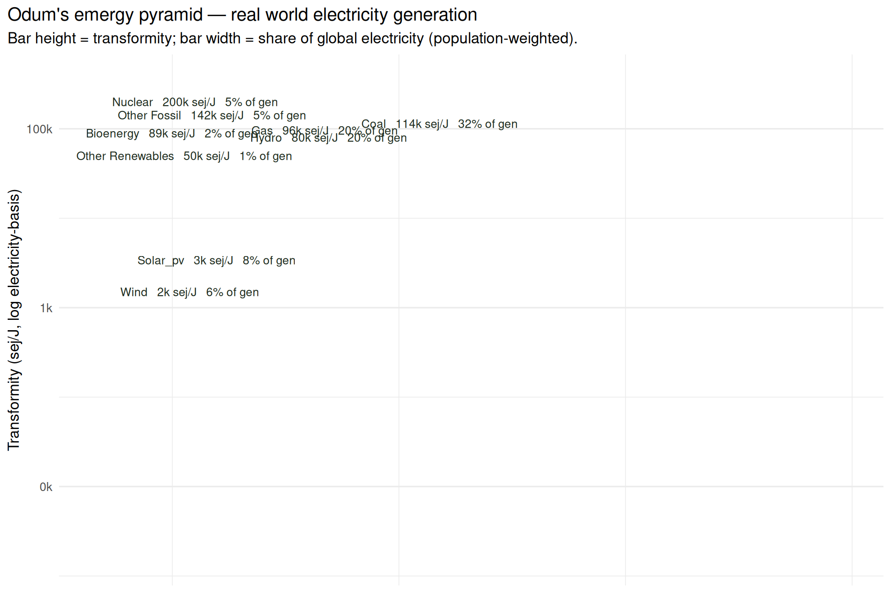
Odum’s emergy pyramid — with real world electricity generation. Each fuel’s transformity (electricity-basis) sets its position on the y-axis; the width of each tier is proportional to that fuel’s global generation share. Nuclear + hydro concentrate massive prior emergy into a small joule count; solar + wind sit at the base with little prior investment.
One cell at a time — the finest resolution
The 17,028 cells in emergy_metrics.rds$cell each carry a
full per-cell emergy story. The cell with the biggest emergy gap (a
grid-adjacent cell in a rural Sub-Saharan African region with high
population + low delivery) is a Bundle-O test case:
The Round-19 country_unified_metrics() function (EJ-native)
computed insecurity_score = max(0, 1 −
actual_ej/required_ej) — physical adequacy only, no economic
term. HEII is additive to that: it retains physical adequacy AND
introduces the economic axis in the same currency. Both are preserved in
the cache; unified_comparison() joins them for
cross-checking. See Layer M.7 in the tech
report for the sign-agreement diagnostic.
The math (short version)
library(emburdensynth)
# Transformity of the fuel mix in a country-year (electricity-basis,
# post-Bundle-A: fossil transformities divided by their electric efficiency)
grid_transformity("NOR", 2023) # hydro-heavy — moderate (~73k sej/J)
grid_transformity("FRA", 2023) # nuclear-heavy — highest tier (~150k)
grid_transformity("DNK", 2023) # wind + biomass — biomass lifts it (~33k)
grid_transformity("POL", 2023) # coal-heavy — high (~88k, was ~35k pre-Bundle-A)
# Household empower — sej/yr delivered per household
household_empower("USA", 2020, kwh_per_year = 11000) # sej per year
# Emergy Sustainability Index (Odum)
household_ESI("NOR", 2020) # named vec: R_pct, NR_pct, ELR, EYR, ESI
# National empower / GDP
emergy_per_money("FRA", 2020) # sej per $All functions ship in the emburden
R package. The full metric table for 213 countries is at docs/global_analysis_data/emergy_metrics.rds.
Emergy accounting does not supersede CO2 accounting. They answer different questions. The climate-justice mismatch (67× per-capita cumulative CO2 disparity) still stands as a headline for who pays what. Emergy adds a quality axis: what kind of energy they pay for.
The six panels
The technical report (Layer M, pp 82–91) shows six emergy figures:
- Grid transformity world map (sej/J)
- Country empower per capita world map (sej/person/yr)
- ESI vs GDP-pc scatter (weak correlation)
- Household em/USD arbitrage scatter
- Cell-level %R world map (17,028 cells)
- Cell-level emergy insecurity gap (sej/yr)
See also: The Atlas · Methods · Data provenance · Papers · Code